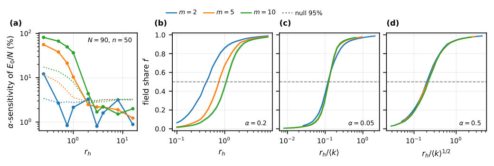
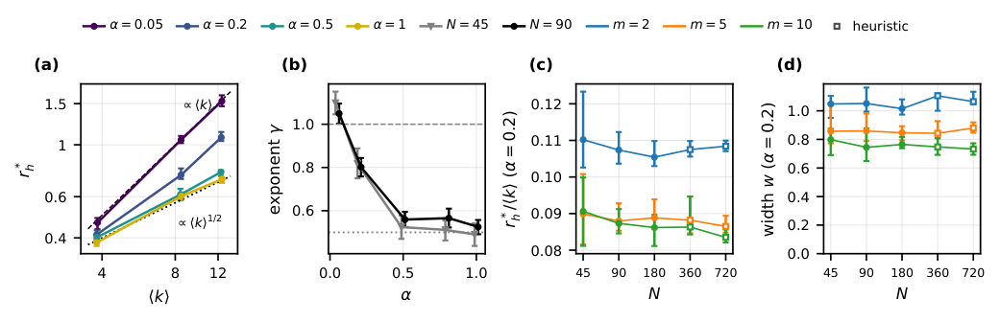
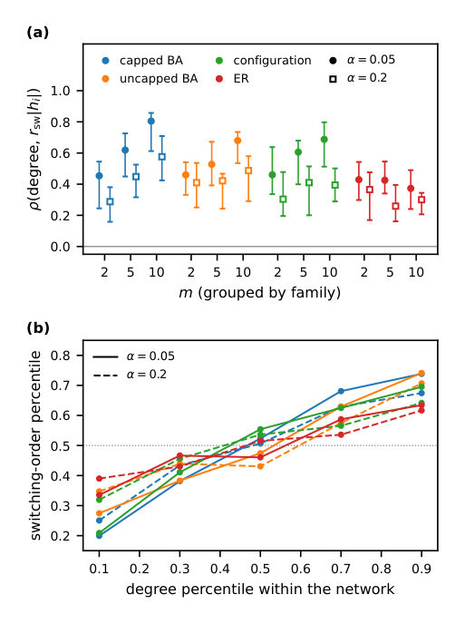

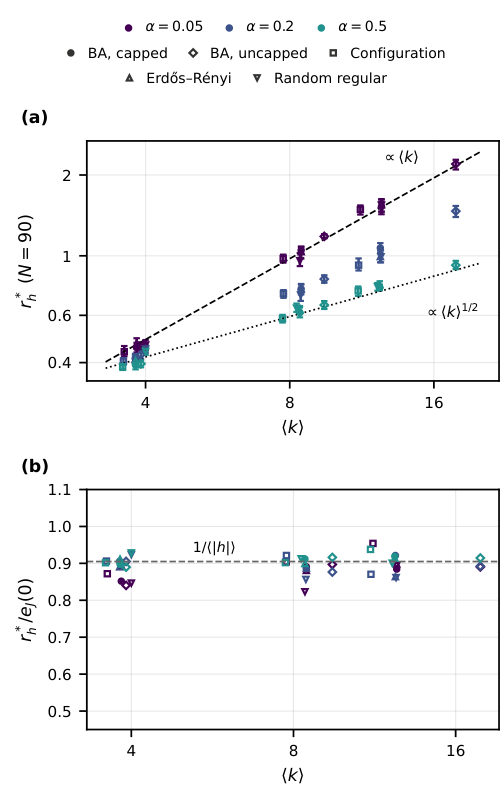
← Index · ← Previous · Next →
Authors: Natalia Romero
Type: theory · Category: disordered systems and neural networks · PDF: https://arxiv.org/pdf/2610.32021v1
Analysis basis: full PDF text, analyzed in chunks




Summary. This paper models social opinion dynamics using the random-field Ising model on complex networks, treating individual beliefs as external fields and social ties as couplings. The authors calculate a critical crossover point, $r_h^*$, where the influence of individual conviction balances that of social conformity. The work is significant for its successful, parameter-free validation of advanced theoretical techniques like zero-temperature cavity theory against rigorous ground-state computations.
Why it may be interesting. The use of the RFIM framework to model social dynamics provides a concrete, solvable physical analogy for opinion polarization and consensus formation, linking concepts from spin glasses to social science.
Main problem. The paper models the competition between individual conviction (local field) and social conformity (social couplings) in an electorate using the random-field Ising model.
Main result. It establishes a parameter-free prediction for the crossover point ($r_h^*$) where the field energy equals the coupling energy, showing strong agreement between theoretical predictions and exact ground state calculations.
Method. The study employs zero-temperature cavity theory solved on the graph ensemble, comparing its predictions against exact ground state calculations for the random-field Ising model.
Model / system. The system is the zero-temperature random-field Ising model on sparse graphs, described by a Hamiltonian involving quenched fields ($h_i$) and social couplings ($J_{ij}$), with a fraction $\alpha$ of couplings being antagonistic.
Key observables. The crossover point $r_h^*$ (where field energy equals coupling energy), the field share of the ground-state energy, and the scaling exponent $\gamma$ of $r_h^*$ with network density $\langle k angle$.
Important parameters / regimes. The fraction of antagonistic ties ($\alpha$), the mean degree ($\langle k angle$), and the ratio of field energy to coupling energy.
Assumptions / limitations. The analysis is performed at zero temperature ($T=0$), and the cavity theory approach is used to solve the ensemble average, though its limitations are noted at intermediate frustration.
Figures summary. The notes mention comparisons of $r_{1/2}$ (half switched) vs. $r^*_h$ (field share 1/2) across different network structures and the degree correlation ($ ho$) in the appendix.
Paper structure. The paper introduces the RFIM model for opinion dynamics, calculates the crossover point $r_h^*$ using exact methods, validates the zero-temperature cavity theory against these exact results across various graph ensembles, and analyzes the resulting scaling laws.
We study the zero-temperature random-field Ising model with +-J bond disorder on sparse graphs as a model of an electorate: survey-derived, trimodal fields compete with social couplings, a fraction alpha of which are antagonistic. With exact ground states up to N=180 (over 78000 optimizations, certified except in the densest frustrated cases) and validated heuristics to N=720, we locate the crossover r_h at which the field carries half of the ground-state energy, close to where half the voters held against their own field have switched (0.93 r_h for alpha<=0.2). Our main test is a zero-temperature cavity theory solved on the graph ensemble with no fitted parameter: at seven densities not otherwise used, predicted before their exact ground states were computed, it placed r_h within 10% in 19 of 21 cells (median error 3%). Its errors are unsigned at alpha=0.05 and 0.5 but all negative at alpha=0.2, where it predicts the coupling energy correctly but a crossover that is early and, at high density, too sharp, and where its replica-symmetric solution is unstable in six of seven cells, consistent with replica-symmetry breaking at intermediate frustration. Empirically r_h~0.91 e_J(0), with e_J(0) the coupling energy of the zero-field ground state, inside a rigorous per-instance factor-of-two window, so the known +-J energy laws carry over: r_h ~
Authors: Manaka Okuyama, Masayuki Ohzeki
Type: theory · Category: disordered systems and neural networks · PDF: https://arxiv.org/pdf/2610.32291v1
Analysis basis: full PDF text, analyzed in chunks
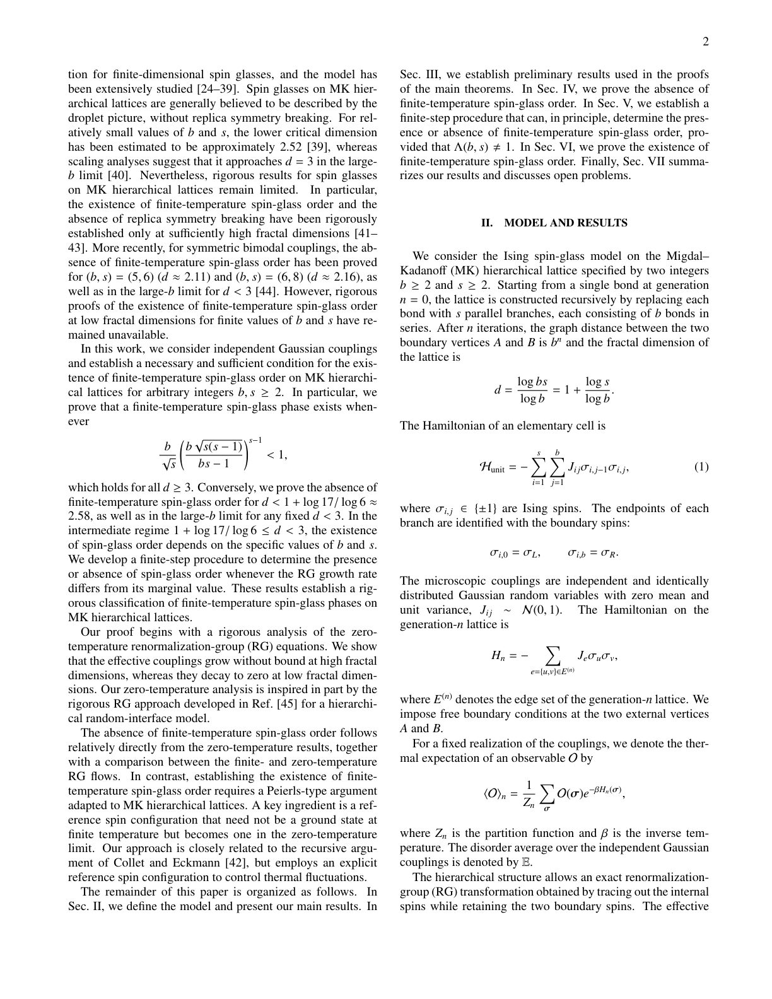
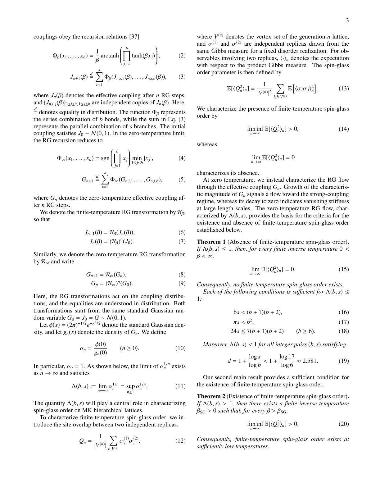
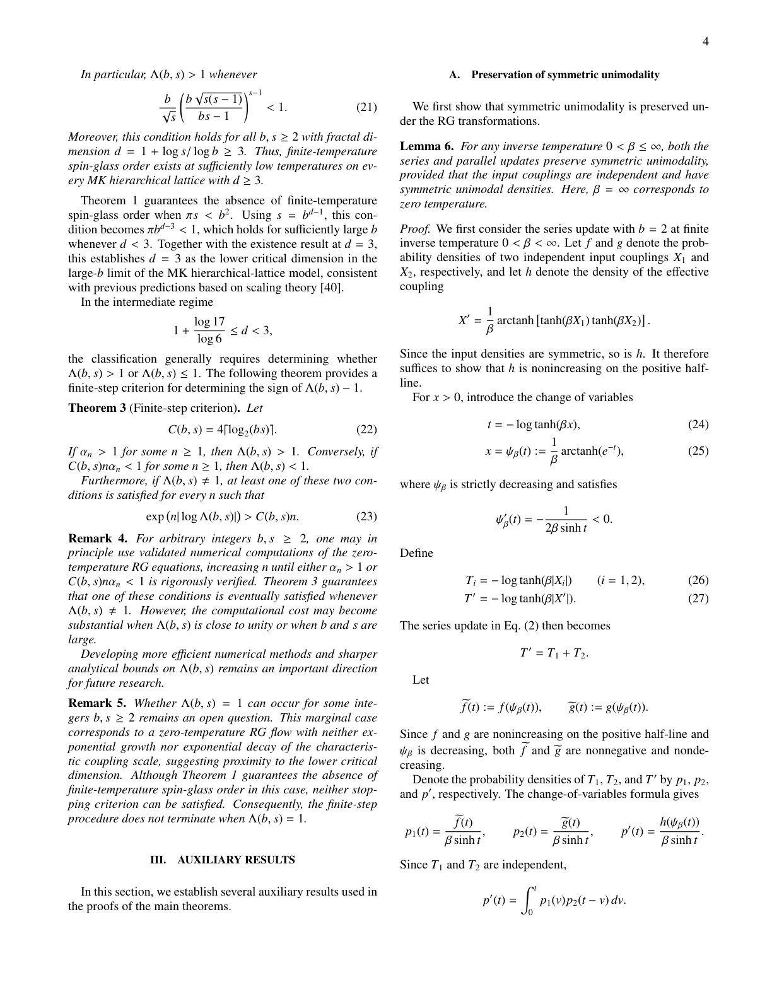
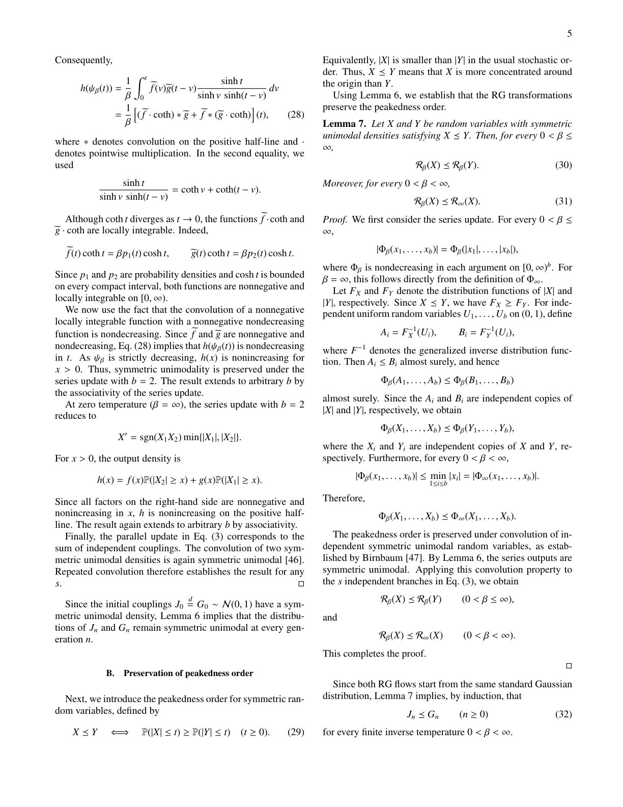
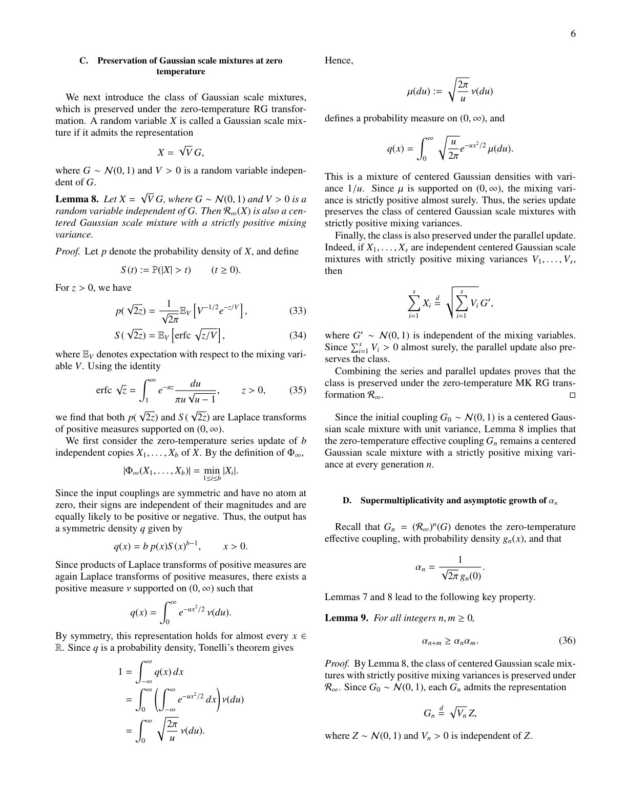
Summary. This work rigorously classifies the existence of finite-temperature spin-glass order on MK hierarchical lattices by analyzing the Renormalization Group flow. It derives a necessary and sufficient condition based on the parameters $s$ and $b$, providing a complete theoretical framework for this class of disordered quantum magnets.
Why it may be interesting. The rigorous mathematical techniques used to classify phase transitions in disordered systems, particularly the use of RG flow analysis, are highly relevant to understanding complex many-body physics in quantum materials.
Main problem. The paper aims to provide a complete classification of the existence and absence of finite-temperature spin-glass order on Migdal--Kadanoff (MK) hierarchical lattices.
Main result. It establishes rigorous conditions based on the parameter $\Lambda(b, s)$ to determine if a finite-temperature spin-glass phase exists, providing a complete characterization for arbitrary lattice parameters $b$ and $s$.
Method. The analysis relies on exact Renormalization-Group (RG) transformations applied to the Ising spin-glass model, comparing the RG flow parameters at finite and zero temperatures.
Model / system. The system is the Ising spin-glass model defined on MK hierarchical lattices, characterized by a fractal dimension $d = 1 + \log s / \log b$. The Hamiltonian involves Gaussian random couplings.
Key observables. The spin-glass order parameter, $E[\langle Q_n^2 angle_n]$, is the primary diagnostic tool used to determine the presence or absence of order.
Important parameters / regimes. The lattice structure is defined by $s$ (parallel branches) and $b$ (bonds in series). The critical diagnostic parameter is $\Lambda(b, s)$, which dictates the phase transition.
Assumptions / limitations. The analysis primarily assumes independent Gaussian couplings ($J_{ij} \sim N(0, 1)$) and utilizes the exact RG structure afforded by the hierarchical lattice.
Paper structure. The paper develops the RG framework for the spin-glass model, derives the necessary and sufficient condition for order existence based on $\Lambda(b, s)$, and provides specific theorems covering the existence ($\Lambda > 1$) and absence ($\Lambda \le 1$) of the phase.
We consider the Ising spin-glass model on Migdal--Kadanoff (MK) hierarchical lattices, characterized by the fractal dimension $d=1+\log s/\log b$, where $s$ and $b$ denote the number of parallel branches and the number of bonds in series within each branch, respectively. For independent Gaussian couplings, we rigorously establish a necessary and sufficient condition for the existence of finite-temperature spin-glass order for arbitrary integers $b,s\ge2$. We prove that a finite-temperature spin-glass phase exists whenever \[ \frac{b}{\sqrt{s}} \left( \frac{b\sqrt{s(s-1)}}{bs-1} \right)^{s-1}<1. \] In particular, this condition holds for all three-dimensional MK hierarchical lattices ($d=3$, or equivalently $s=b^2$), regardless of the choice of $b$. Conversely, we prove the absence of finite-temperature spin-glass order for fractal dimensions $d<1+\log17/\log6\approx2.58$, as well as in the large-$b$ limit for any fixed $d<3$. In the intermediate regime $1+\log17/\log6\le d<3$, we provide a finite-step procedure to determine the presence or absence of spin-glass order, which depends on $b$ and $s$. Our results provide a complete characterization of finite-temperature spin-glass order on MK hierarchical lattices.
Authors: Hasan Abbas Al-Mohammed
Type: theory · Category: quantum information and computing · PDF: https://arxiv.org/pdf/2610.32634v1
Analysis basis: full PDF text, analyzed in chunks
Summary. This technical note develops a feasibility framework for mobile Free-Space QKD, moving beyond simple total key counts to address time-constrained service requirements. By modeling key material in a time-indexed inventory, it establishes a prefix-feasibility criterion that determines if key demands can be met at specific deadlines. This is vital for benchmarking real-world quantum communication systems like those on trains or satellites.
Why it may be interesting. It provides a rigorous, systems-level accounting framework for resource management in quantum communication, which is crucial for designing practical, deadline-aware quantum networks.
Main problem. The paper distinguishes between three concepts for mobile Free-Space Quantum Key Distribution (QKD): physical link availability, guaranteed finite key output, and meeting specific application deadlines.
Main result. A prefix-feasibility criterion was established, showing that service failure can occur even if the total key supply meets the total demand, emphasizing the critical role of timing and inventory management.
Method. The authors developed a time-indexed, security-qualified arrival process and a key-inventory model to track key material over discrete time slots.
Model / system. The system modeled is mobile Free-Space Optical (FSO) QKD links (e.g., train, UAV, satellite-assisted). The model uses a key-inventory recurrence relation ($B_t = B_{t-1} + A_t - D_t$) to track key material.
Key observables. Key inventory ($B_t$), usable key arrival ($A_t$), application key demand ($D_t$), and the deficit diagnostic ($\Gamma$).
Important parameters / regimes. Time index $T$, initial inventory $B_0$, and the required prefix $u$ for feasibility checks.
Assumptions / limitations. Assumes unlimited storage, no key expiration, and that the analysis is a systems-level accounting framework, not a security proof.
Figures summary. Figure 1 illustrates the sequence of analysis gates (Physical $ ightarrow$ Security $ ightarrow$ Service). Table 2 demonstrates a service outage in a key-service ledger when demand peaks before key replenishment.
Paper structure. The paper first formalizes the separation of key concepts, then develops the time-indexed inventory model and the prefix-feasibility criterion. It uses stylized finite block models and numerical examples to illustrate the limitations of simple total-yield calculations.
Mobile free-space quantum key distribution (QKD) links can provide secret bits intermittently, whereas applications may need cryptographic key material at specified times. Optical feasibility, positive finite-key output, and deadline-compliant key service are consequently different claims. This technical note formalizes their separation through a time-indexed, security-qualified arrival process and a key-inventory model. Under explicitly stated assumptions, an elementary prefix-feasibility condition characterizes whether all demands can be served without borrowing keys from future contact windows. A stylized finite block model then illustrates why positive long-run optical availability does not ensure positive finite-key output when observations are fragmented into short contacts. Two transparent numerical examples distinguish total key yield from key delivery time and show the conditional benefit of pooling data across acquisition windows. The analysis is intended as a systems-level accounting and benchmarking framework, not a new QKD security proof or a demonstration of hardware performance. It identifies measurements and security assumptions needed to evaluate train, UAV, high-altitude-platform, and satellite-assisted optical QKD against application-level service requirements.
Authors: Hongyu Li, Shuikang Yu, Huachen Rao, Zhuying Wang, Xingchen Zhou, Houpu Li, Yunmei Zhang, Zhao Gong, Xin Yu, Rui Wu, Tao Wu, Zhenyu Wang, Ziji Xiang, Xianhui Chen
Type: both · Category: strongly correlated electrons · PDF: https://arxiv.org/pdf/2610.32097v1
Analysis basis: full PDF text, analyzed in chunks
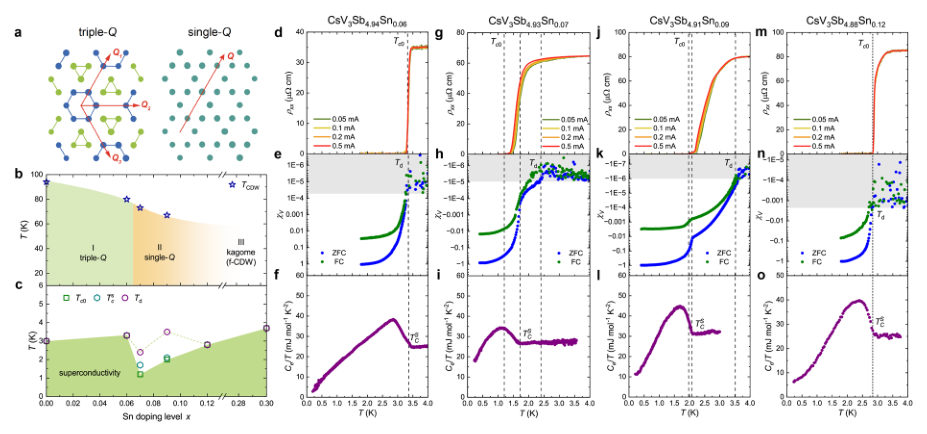
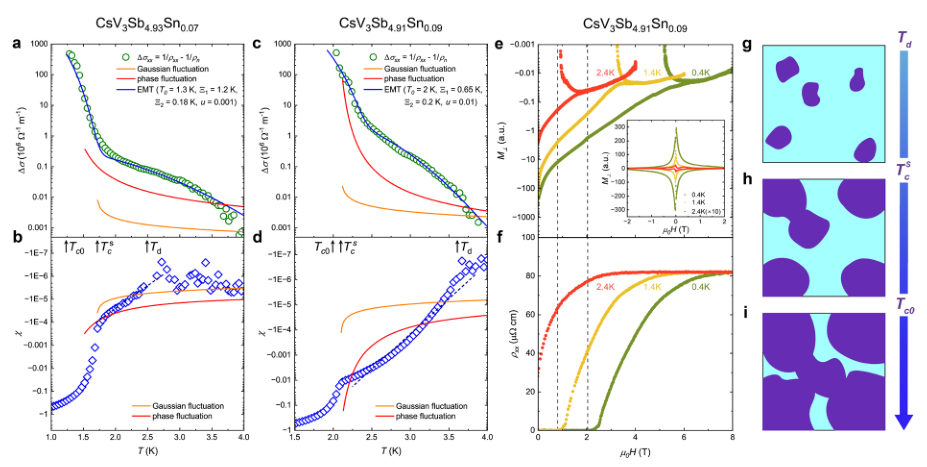
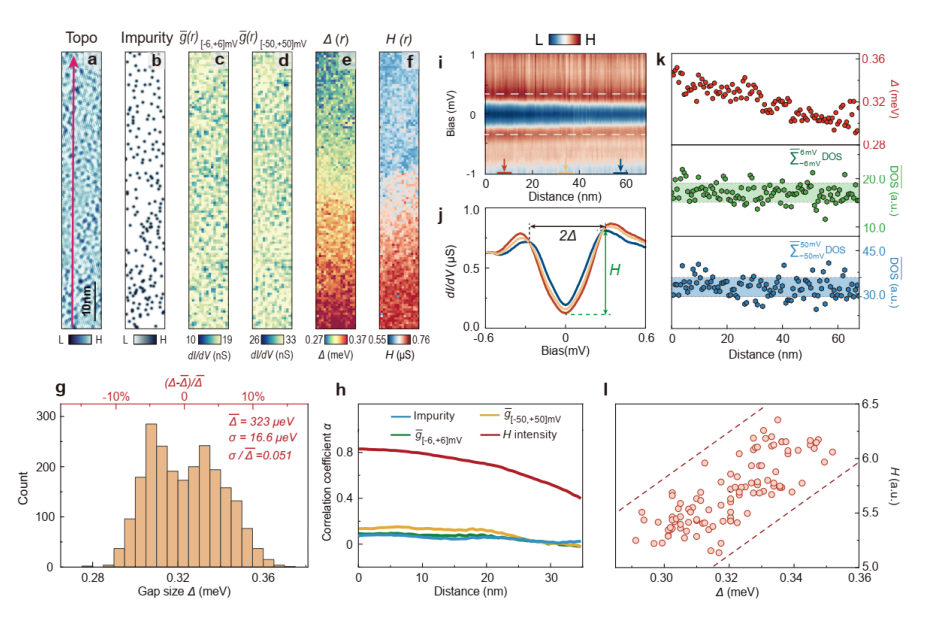
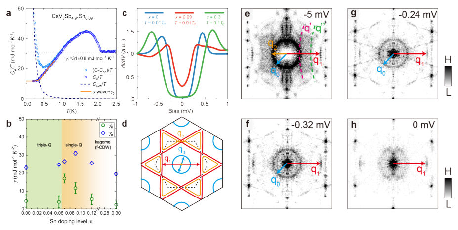
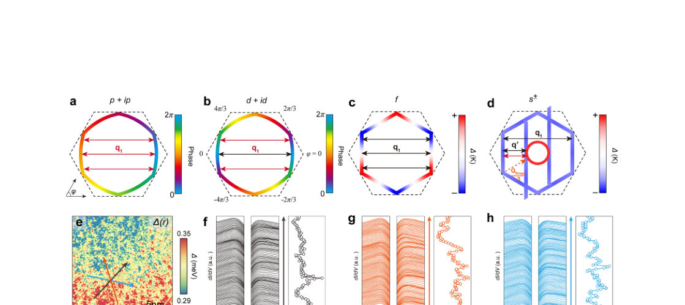
Summary. This work examines superconductivity in kagome superconductors where the CDW order changes. By combining STM and transport measurements, the authors reveal that the superconducting state becomes spatially heterogeneous when the CDW transitions to a short-range stripe pattern. This inhomogeneity is interpreted as evidence of unconventional superconductivity driven by pair-breaking scattering from the charge stripes.
Why it may be interesting. The strong coupling between charge order (CDW) and superconductivity, leading to unconventional pairing mechanisms, is a central theme in strongly correlated electron physics, relevant to understanding high-Tc superconductors.
Main problem. The paper investigates the complex interplay between Charge Density Wave (CDW) order and superconductivity in kagome superconductors, specifically how the superconducting state evolves as the CDW order changes.
Main result. The superconducting state in the stripe-ordered phase is found to be heterogeneous, attributed not to chemical disorder but to strong pair-breaking scattering from the short-range charge stripes, indicating unconventional superconductivity.
Method. The study combines multiple experimental techniques, including thermodynamics, electrical transport measurements, and Scanning Tunneling Microscopy (STM) to probe real-space variations in the superconducting gap.
Model / system. The system studied is the kagome superconductor CsV3Sb5-xSnx, which exhibits distinct CDW phases (long-range triple-Q, short-range stripelike, fluctuating) depending on the doping concentration x.
Key observables. Pronounced spatial variation of the superconducting gap ($\Delta$), distribution of critical temperature ($T_c$), superconducting precursor effects, and remnants of electronic specific heat.
Important parameters / regimes. Doping concentration x, which drives the transition between different CDW phases (e.g., at $x_c = 0.07$).
Assumptions / limitations. The unusual superconducting signatures are assumed to arise from pair-breaking scattering by the short-range charge stripes, contrasting with simple BCS expectations.
Figures summary. Figures illustrate the phase diagram mapping CDW types vs. doping, and STM/transport data showing the disparity between different superconducting transition temperatures ($T_{c0}, T_d, T_{Tccs}$) in the stripe-ordered phase.
Paper structure. The paper first establishes the competition between CDW and superconductivity, then uses transport and STM data to characterize the superconducting inhomogeneity in the stripe-ordered phase, and finally discusses the implications for the pairing symmetry.
Charge density wave (CDW) and superconductivity have long been recognized as competing orders. However, recent achievements establish that the interplay between these two collective electronic phenomena can be more perplexing, with emergent phenomena arising from their cooperation. Here we report a distinctive case of the kagome superconductors CsV3Sb5-xSnx, in which the characteristics of superconductivity evolve in accordance with the form of CDW order. As the triple-Q CDW in CsV3Sb5 transforms to a short-range stripelike CDW at xc = 0.07, a sudden change in superconducting properties occurs concomitantly. A combination of thermodynamic, electrical transport and scanning tunneling microscopy experiments reveals a heterogeneous superconducting state beyond xc: the superconducting gap exhibits pronounced spatial variation, in conformity with a distribution of critical temperature and the resulted superconducting precursor effects. Moreover, abundant normal fluid persists deep into the superconducting state, as evidenced by remnants of electronic specific heat and zero-energy quasiparticle interference. These observations are unrelated to the chemical inhomogeneity and residual strain effect introduced by Sn substitution. Instead, they emulate the phenomenology that a sign-changing superconducting order parameter is subject to strong pair-breaking scattering with the short-range charge stripes and hence reflect the unconventional nature of superconductivity developing inside the charge-stripe state.
Authors: Mohammed Barhoush, Amit Behera
Type: theory · Category: quantum information and computing · PDF: https://arxiv.org/pdf/2610.32145v1
Analysis basis: full PDF text, analyzed in chunks
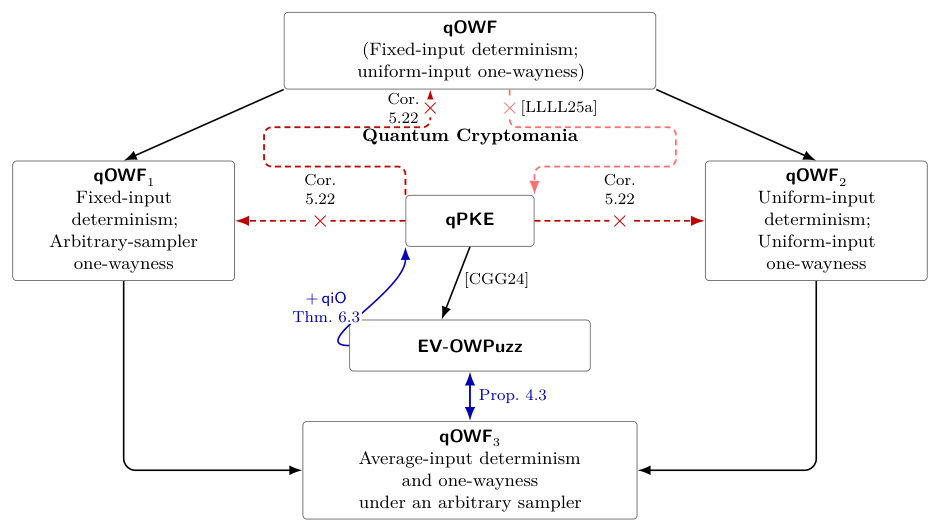
Summary. This paper deeply analyzes the necessary computational assumptions for quantum public-key encryption (qPKE) in a classical communication setting. It proves a black-box separation demonstrating that qPKE can exist even when quantum one-way functions (qOWFs) do not. Furthermore, it provides a constructive link, showing qPKE can be built from quantum indistinguishability obfuscation, thus refining our understanding of quantum cryptographic foundations.
Why it may be interesting. While highly theoretical, the rigorous analysis of cryptographic assumptions in the quantum setting pushes the boundaries of what is computationally possible, which informs the theoretical limits of quantum information processing.
Main problem. The paper investigates the fundamental relationship between quantum-computable one-way functions (qOWFs) and quantum public-key encryption (qPKE) when communication and keys are restricted to classical channels.
Main result. A black-box separation is established showing that a qPKE scheme can exist without the existence of qOWFs, and conversely, qPKE can be constructed from weaker assumptions like quantum indistinguishability obfuscation.
Method. The authors employ black-box separation techniques using specific oracles, alongside constructive proofs that build qPKE from other quantum primitives.
Model / system. The theoretical model is the Quantum Computation with Classical Communication (QCCC) setting, focusing on cryptographic primitives like qPKE and qOWFs.
Key observables. IND-CPA security, existence/non-existence of qOWFs (qOWF1, qOWF2, qOWF3), and the relationship between qPKE and these functions.
Important parameters / regimes. The separation relies on the existence of a specific unitary, real, and self-inverse oracle.
Assumptions / limitations. The primary assumption is the black-box model for cryptographic primitives, and the separation results are conditional on the existence of specific oracles.
Figures summary. Figure 1 summarizes the complex implications, equivalences, and black-box impossibilities between different types of qOWFs, qPKE, and EV-OWPuzz.
Paper structure. The paper develops by first presenting the negative result (separation of qPKE from qOWFs) using oracle constructions, followed by a positive construction showing qPKE can be built from quantum indistinguishability obfuscation and verifiable one-way puzzles.
In classical cryptography, one-way functions are necessary for most of cryptography. In the quantum world, however, Kretschmer at {TQC'21} and subsequent works have demonstrated that quantum versions of various primitives in minicrypt, such as signatures and private-key encryption, do not require quantum-computable one-way functions (\textsf{qOWF}s). However, the question of the necessity of \textsf{qOWF}s for primitives in Cryptomania like public-key encryption with classical public keys and ciphertexts (\textsf{qPKE}) has remained open. We provide a comprehensive picture of the relationship between \textsf{qPKE} and \textsf{qOWF}. First, our main result is a black-box separation between \textsf{qOWF}s and \textsf{qPKE}. In particular, we show that relative to a unitary, real, and self-inverse oracle, there exists a \textsf{qPKE} scheme (with classical keys and ciphertexts), but \textsf{qOWF}s do not exist. Further, our oracles admit a point-function obfuscation construction, thus ruling out black-box construction of \textsf{qOWF} from point function obfuscations. On the positive side, we construct \textsf{qPKE} from quantum indistinguishability obfuscation for quantum circuits with classical obfuscated descriptions and efficiently verifiable one-way puzzles, which is known to be a potentially weaker assumption than \textsf{qOWF}s, due to an existing black-box separation. Our construction is the quantum analog of the classical construction of \textsf{PKE} from one-way functions and indistinguishability obfuscation in the quantum computation with classical communication (QCCC) setting.
Authors: Malik Mouaji, Saif Al-Kuwari
Type: theory · Category: quantum information and computing · PDF: https://arxiv.org/pdf/2610.32428v1
Analysis basis: full PDF text, analyzed in chunks
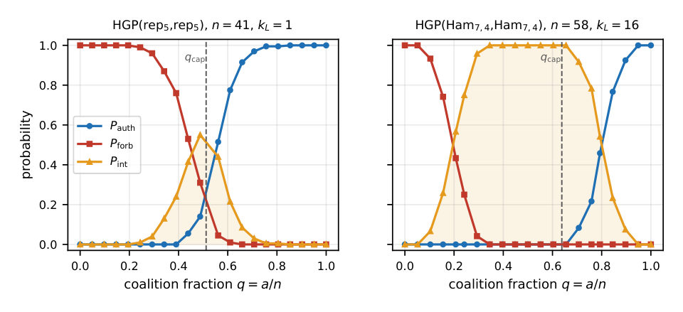
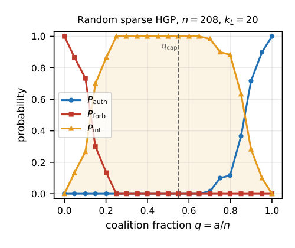
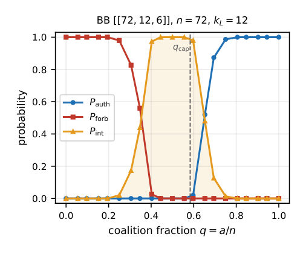
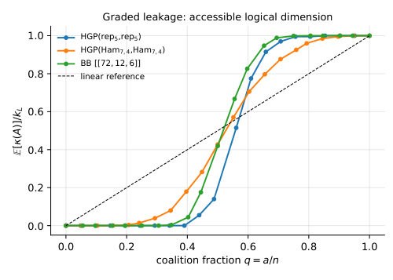
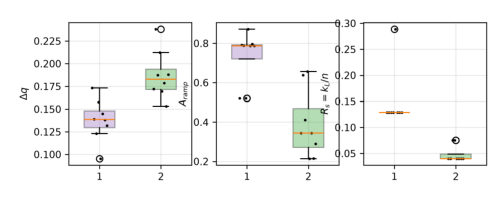
Summary. This paper establishes a comprehensive computational framework for analyzing Quantum Secret Sharing derived from CSS qLDPC codes. It moves beyond pure algebra by quantifying physical implementation overheads, such as network routing and scheduling depth. The results show that the physical topology and qubit partitioning can significantly alter the achievable security and reconstruction thresholds of the quantum secret.
Why it may be interesting. This work provides a highly detailed, computationally rigorous bridge connecting abstract algebraic coding theory (QEC) to the practical engineering challenges of implementing quantum protocols in physical, networked hardware.
Main problem. The paper develops an exact computational framework to characterize Quantum Secret Sharing (QSS) access structures and incorporate physical implementation costs when using CSS quantum low-density parity-check (qLDPC) codes.
Main result. The framework successfully characterizes authorized, forbidden, and intermediate coalitions using algebraic criteria, and demonstrates that physical network constraints (like Steiner-routing cost) significantly impact the practical security and reconstruction thresholds of the QSS scheme.
Method. The methods involve using restricted parity-check matrices and binary linear algebra to analyze the logical structure, alongside incorporating physical network costs (Tanner-incidence, Steiner-routing, scheduling-depth) as explicit design variables.
Model / system. The system modeled is Quantum Secret Sharing implemented via CSS qLDPC codes. The security and accessibility are determined by the algebraic properties of the code's parity-check matrices ($H_X, H_Z$) and the structure of the resulting logical operators.
Key observables. Authorized/forbidden coalition status, accessible logical dimension $\kappa(A)$, total network cost ($W_{tot}$), Steiner-routing cost ($C_{St}$), and block-level security/reconstruction thresholds.
Important parameters / regimes. Code parameters (e.g., $[[72, 12, 6]]$), secret rate ($R_s$), and the physical topology of the network.
Assumptions / limitations. The analysis is restricted to using CSS qLDPC codes, and the network cost calculations rely on treating qubit partitioning as an explicit design variable.
Figures summary. Figures illustrate the block-level access profiles for different codes and partitions, and show the distribution of ramp width ($\Delta t$) over random balanced partitions, comparing these to theoretical benchmarks.
Paper structure. The paper builds from an algebraic characterization of QSS access structures using linear algebra (Chunk 2), extends this by introducing the accessible logical dimension $\kappa(A)$ (Chunk 1), and finally integrates physical network constraints and analyzes specific code families using numerical experiments (Chunks 3 & 4).
Quantum secret sharing (QSS) schemes can be constructed from quantum error-correcting codes, but characterizing their access structures and implementation costs becomes challenging for finite-length, high-rate quantum low-density parity-check (qLDPC) codes. We develop an exact computational framework for QSS induced by CSS qLDPC codes. The framework characterizes authorized, forbidden, and intermediate coalitions using restricted parity-check matrices and binary linear algebra, and introduces the accessible logical dimension \(κ(A)\), defined through the symplectic rank of locally supported logical classes, to refine the characterization of intermediate coalitions. We further incorporate physical network constraints through separate Tanner-incidence, Steiner-routing, and scheduling-depth costs, and treat the partitioning of physical qubits into participants as an explicit design variable. Numerical experiments on four CSS qLDPC codes verify the predicted complement duality and monotonicity properties and show substantial variation in access transitions and network costs. For the codes studied, the bivariate bicycle instance exhibits the sharpest transition, while network embedding costs vary by more than an order of magnitude across physical topologies. We also show that participant partitioning can substantially improve block-level security and reconstruction thresholds. These results provide a practical bridge between the algebraic structure of CSS qLDPC codes, the graded accessibility of quantum secrets, and the physical constraints of networked QSS implementations.
Authors: Khadijeh Bagheri, Hassan Khodaiemehr, Chen Feng
Type: theory · Category: other · PDF: https://arxiv.org/pdf/2610.31814v1
Analysis basis: full PDF text, analyzed in chunks
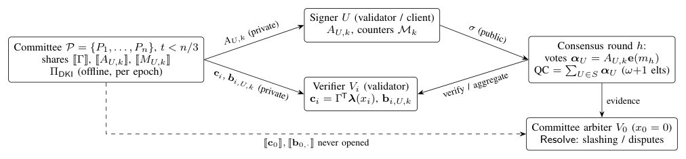
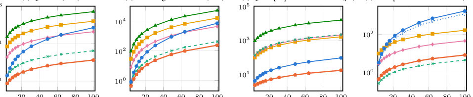
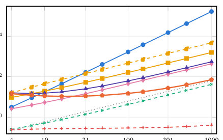
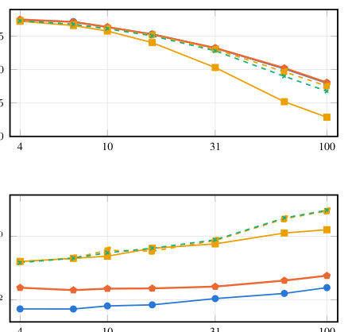
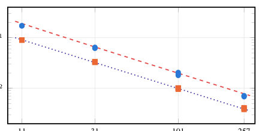
Summary. This paper introduces SILMARILS-MV, a novel, unconditionally secure multi-verifier signature scheme designed for permissioned blockchains. It solves critical issues in current blockchain signatures by offering dealer-free key issuance and linear aggregation. The scheme demonstrates superior performance, requiring significantly less bandwidth and CPU power compared to established post-quantum alternatives.
Why it may be interesting. While purely cryptographic, the focus on achieving information-theoretic security and high efficiency for distributed ledger technology (DLT) has implications for secure quantum-resistant networking protocols.
Main problem. The paper addresses the need for an information-theoretically secure, multi-verifier signature scheme for permissioned blockchains that overcomes limitations of existing methods regarding trust assumptions and scalability.
Main result. SILMARILS-MV provides an unconditionally secure signature that is strongly unforgeable, linearly aggregatable, and features constant-size finality certificates, significantly outperforming existing schemes in both bandwidth and computational efficiency.
Method. The scheme constructs the signature as a vector $\alpha = A e(m)$ and relies on secret functional keys $c_i$ derived from virtual anchors $\Gamma$ to ensure unconditional security.
Model / system. The model is a permissioned blockchain environment utilizing Byzantine Fault Tolerant (BFT) protocols, involving a committee of validators and external verifiers.
Key observables. Verification time ($2.4 \mu s$), authentication traffic per validator per block ($71 \text{ KiB}$ at 1000 validators), and transaction throughput (2.8x more than ML-DSA-44 in a prototype).
Important parameters / regimes. The security relies on tolerating up to $\omega$ corrupt verifiers and requires the committee size $n$ to support $t < n/3$ for key issuance.
Assumptions / limitations. The scheme assumes the existence of perfectly secure MPC for key issuance and operates within the context of BFT consensus mechanisms.
Figures summary. The notes mention tables comparing the scheme against prior work and summarizing its contributions across various cryptographic dimensions.
Paper structure. The paper introduces the problem, details the SILMARILS-MV scheme using algebraic tools, proves its security properties, and concludes with performance evaluations and comparisons to state-of-the-art signatures like ML-DSA-44.
Permissioned blockchains authenticate transactions, votes and quorum certificates with computationally secure signatures, and post-quantum replacements inflate consensus traffic by orders of magnitude. Information-theoretic alternatives have required a trusted authority, quantum channels, per-signature interaction, or single-use keys with bounded transfer. We present SILMARILS-MV, a multi-verifier unconditionally secure signature in which a signature is the vector $α= A\,e(m)$ and each verifier holds a secret functional $c_i = Γ^T λ(x_i)$ derived from virtual anchors $Γ$ that nobody learns. Against unbounded adversaries corrupting up to $ω$ verifiers and any signers, and observing every decision, an honest verifier accepts a forged or invalid signature with probability at most $Q/q + 1/(q-1)$, a bound that is tight in its leading term. The scheme is strongly unforgeable, non-repudiable, transferable across unboundedly many hops, and linearly aggregatable. Keys are issued by the validators through perfectly secure MPC for $t < n/3$, without broadcast. To scale, we let the committee itself sign: in threshold notarization, finality certificates have constant size $32(ω+1)$ bytes and per-validator issuance cost no longer depends on $n$. Arbiter-verified keys give clients 32-byte signatures, robust redistribution supports membership changes and share refresh, and verifiers can be enrolled retroactively. A certificate verifies in 2.4 microseconds. In an analytic normal-case model at 1000 validators, threshold notarization needs 71 KiB of authentication traffic per validator per block, 22x less than ML-DSA-44 for admitted verifiers. In a Rust HotStuff prototype with 100 validators, SILMARILS-MV commits 2.8x more transactions per second than ML-DSA-44 with 67x less cryptographic CPU, and Monte-Carlo attacks match the bounds.
Authors: Philipp Kammerlander, Thomas E. O'Brien, Robbie King, Rolando D. Somma, Mária Kieferová, Brad Lackey, Alexander Schmidhuber, Siddhartha Jain, Andi Gu, Yuri Alexeev, Shouvanik Chakrabarti, Ruslan Shaydulin, Pietro M. Posta, Guang Hao Low, Dar Gilboa, Matthias Troyer, Barry C. Sanders, Matthias Christandl, Elica Kyoseva, Catherine Lefebvre, Ryan Babbush
Type: theory · Category: quantum information and computing · PDF: https://arxiv.org/pdf/2610.32595v1
Analysis basis: full PDF text, analyzed in chunks
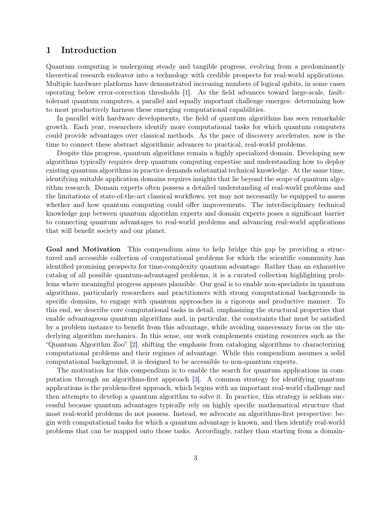
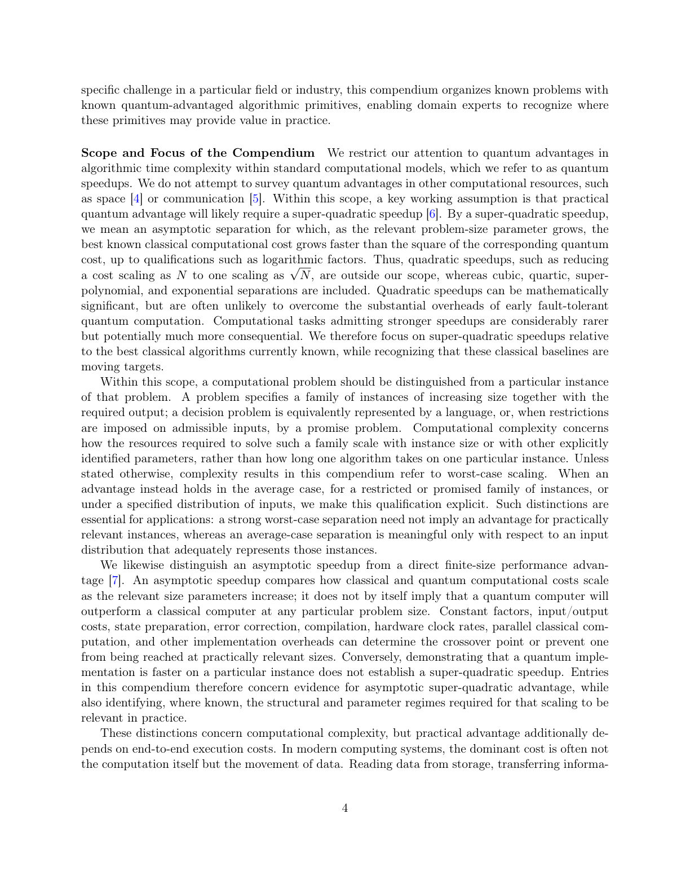
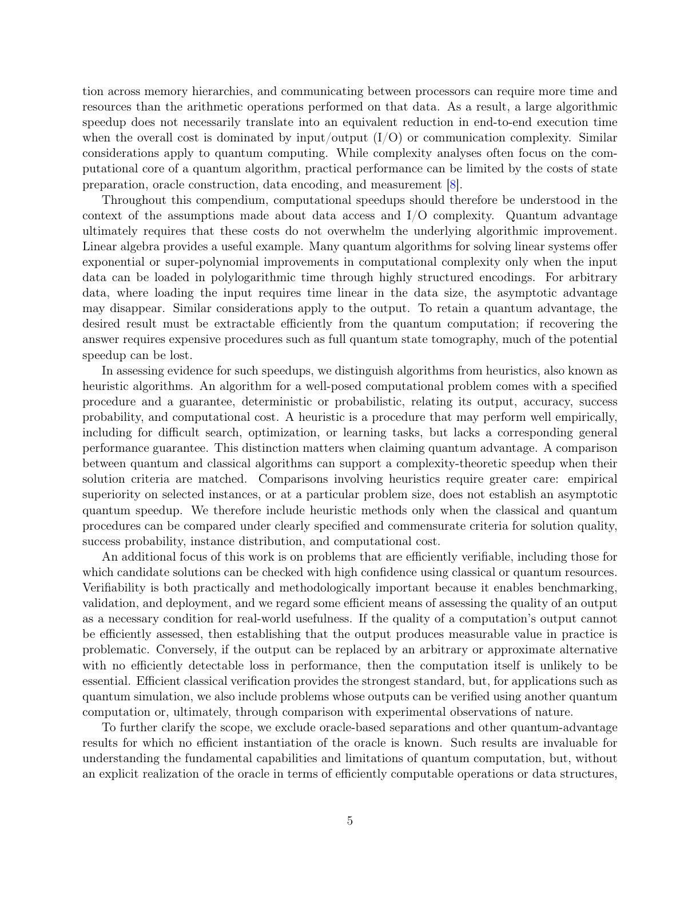
Summary. This paper compiles a reference guide detailing computational problems that are theoretically expected to yield super-quadratic quantum speedups. It moves beyond abstract algorithms by focusing on the structural properties of real-world problems that can harness this advantage. This framework is designed to bridge the gap between quantum complexity theory and practical domain expertise.
Why it may be interesting. While highly theoretical, the rigorous classification of where quantum advantage might exist provides a crucial roadmap for applying quantum computation to complex physical simulations, especially those involving differential equations or topological invariants.
Main problem. To provide a structured, accessible compendium of computational problems that show credible prospects for achieving super-quadratic quantum speedups over classical methods.
Main result. The paper establishes a framework (Stages I, II, III) to guide researchers in connecting theoretical quantum advantage primitives to practical, real-world computational use cases.
Method. It analyzes the structural constraints required for a problem family to yield a super-quadratic speedup, focusing on problem characterization rather than specific algorithms.
Model / system. The focus is on abstract computational problems (families of instances) rather than a specific physical Hamiltonian or quantum hardware platform. It distinguishes between problem structure and algorithmic implementation.
Key observables. Super-quadratic speedup in offline non-relativized time-complexity.
Important parameters / regimes. The required structural constraints on real-world instances to guarantee the asymptotic advantage.
Assumptions / limitations. The analysis assumes a solid computational background for the reader and acknowledges that I/O and data movement costs can negate theoretical speedups.
Paper structure. The content is structured into 'Stage I Problems: Primitives with Evidence for Quantum Advantage' and 'Stage II Problems: Concrete Instances Exhibiting Quantum Advantage,' guiding the transition toward practical application.
This compendium presents a structured collection of computational problems with credible prospects for realizing meaningful quantum advantage, focused on describing problem characteristics rather than specific algorithms. It is intended for non-quantum researchers and practitioners with strong computational backgrounds, particularly domain experts, seeking to assess the relevance of quantum methods to real-world problems. The compendium focuses on enumerating core problems for which there is good evidence that a quantum computer can realize more than a quadratic speedup in offline non-relativized time-complexity (e.g., as opposed to in oracular settings, streaming models, or communication advantages). Entries characterize the structural constraints that real-world instances must satisfy to realize those advantages in practice. The intention is to provide a reference that can be leveraged to connect quantum algorithms to practical use cases.
Authors: Yael Tauman Kalai, Dakshita Khurana, Justin Raizes
Type: theory · Category: quantum information and computing · PDF: https://arxiv.org/pdf/2610.31775v1
Analysis basis: full PDF text, analyzed in chunks
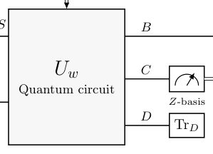
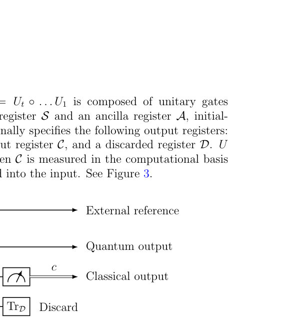
Summary. This paper demonstrates that a classical client can securely simulate a fully functional quantum computer by interacting with a single, untrusted quantum server. The protocol achieves this through a general-purpose, maliciously secure two-party computation framework. This breakthrough resolves key open problems in quantum verification and remote state preparation, establishing a 'classical leash' for quantum computation.
Why it may be interesting. This work establishes a powerful cryptographic primitive that allows classical parties to leverage quantum resources remotely, which is foundational for distributed quantum computation and quantum networking protocols.
Main problem. To determine if a classical client, lacking quantum hardware, can simulate the full capabilities of a trusted quantum computer by interacting with a single, untrusted quantum server.
Main result. The authors construct a general-purpose, maliciously secure two-party computation protocol allowing a classical party to act as a quantum party, resolving issues like classical verification of quantum sampling and remote state preparation.
Method. The core method is a two-party computation protocol realized through classical communication, achieving security via $\epsilon$-simulation indistinguishability, assuming post-quantum hardness of learning with errors.
Model / system. The model involves a classical client interacting with an untrusted quantum server to perform quantum computations, state preparation, and memory retention across multiple rounds.
Key observables. $\epsilon$-simulation security, quantum state persistence, and the ability to verify quantum sampling distributions.
Important parameters / regimes. Post-quantum hardness of learning with errors (LWE).
Assumptions / limitations. Security relies on the post-quantum hardness of learning with errors.
Figures summary. Figure 1 illustrates the ideal quantum two-party functionality, showing inputs, the quantum circuit, and designated classical/quantum outputs.
Paper structure. The paper builds from the general goal of simulating quantum computation to specific applications: first, addressing the challenge of state destruction in testing; second, proving the general protocol for secure computation; and finally, deriving corollaries for quantum sampling verification and remote state preparation.
We show that a classical client with no quantum hardware can use a single untrusted and potentially malicious quantum server as if it were its own trusted quantum computer. Through the server, the client can privately choose and run quantum computations, prepare quantum states, and process quantum states supplied by other parties. It can also keep quantum memory on the server, hidden from the server itself, and use that memory in later computations so its quantum state persists across rounds of interaction. Together, these capabilities let a purely classical party act as a quantum party in a variety of interactive protocols. We expect this virtual quantum computer to be a broadly useful tool. As immediate applications, we resolve two known open problems: (1) classical verification of quantum sampling with negligible computational soundness error, and (2) remote state preparation of arbitrary efficiently preparable quantum states. Underlying all of these results is a general-purpose, maliciously secure two-party computation protocol between a classical client and a quantum server, which we construct assuming only the post-quantum hardness of learning with errors.
Authors: Gunagya Singh Mamak, Suhas Vittal, Kabir Dubey, Kaitlin N. Smith, Moinuddin K. Qureshi
Type: theory · Category: quantum information and computing · PDF: https://arxiv.org/pdf/2610.32152v1
Analysis basis: full PDF text, analyzed in chunks
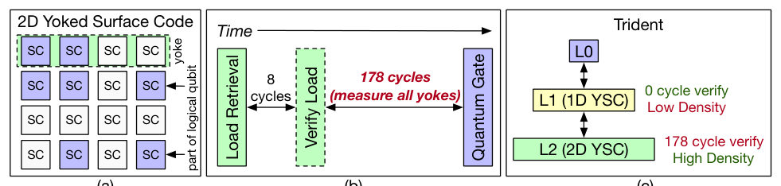
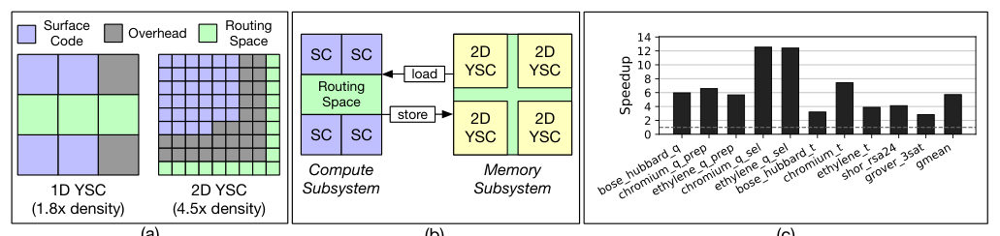
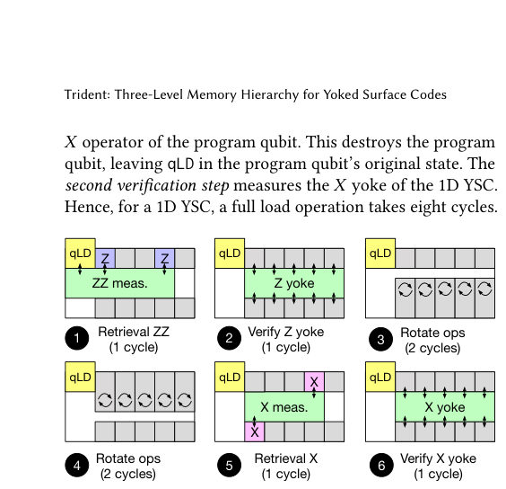
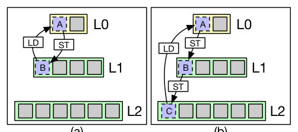
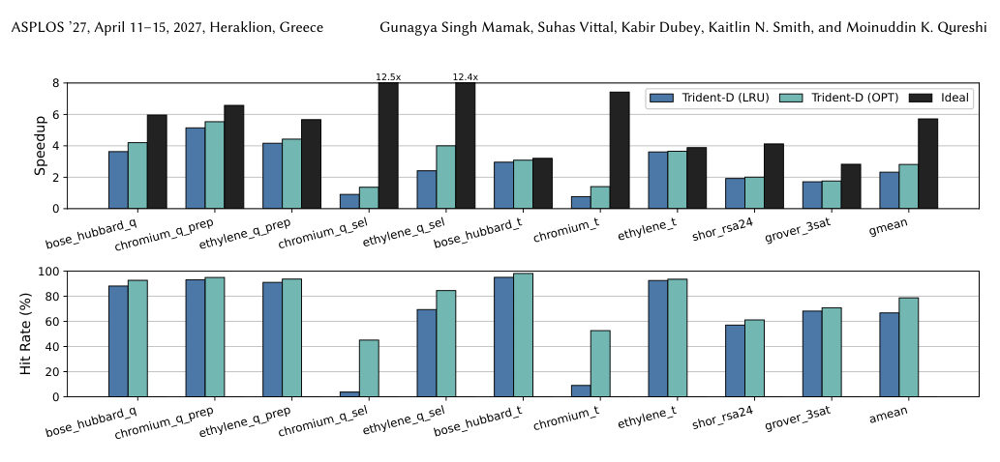
Summary. This paper tackles the performance bottleneck in fault-tolerant quantum computing caused by slow qubit verification when loading data from 2D Yoked Surface Codes. The authors propose 'Trident,' a three-level memory hierarchy that inserts a fast, intermediate 1D YSC tier. This significantly reduces the overall load latency, leading to substantial speedups for future quantum processors.
Why it may be interesting. This work directly addresses the resource overheads in scaling quantum computation by optimizing the memory access patterns, which is crucial for realizing large-scale quantum processors.
Main problem. The primary challenge is the high latency associated with fault-tolerantly verifying the loading of qubits from large 2D Yoked Surface Codes (YSCs) in Fault-Tolerant Quantum Computers (FTQCs).
Main result. The proposed three-level hierarchy, Trident, significantly reduces this verification overhead, achieving speedups of up to 4.2x with only a minor increase in physical qubit cost.
Method. The authors propose expanding the two-level memory hierarchy by introducing a small intermediate 1D YSC tier (L1), leading to demand-driven (Trident-D) or prefetch-driven (Trident-P) strategies.
Model / system. The work models FTQCs utilizing Yoked Surface Codes (YSCs) for error correction. The system is characterized by a memory hierarchy: L0 (compute/surface code), L1 (intermediate 1D YSC), and L2 (2D YSC memory).
Key observables. Speedup factor (e.g., 4.2x for Trident-P), load verification latency (178 cycles for 2D YSC), and physical qubit overhead (4.9% increase).
Important parameters / regimes. The efficiency gain depends on the assumption that most program loads will target the low-latency L1 tier rather than the high-latency L2 tier.
Assumptions / limitations. The speedup relies on the assumption that the intermediate L1 tier will be hit frequently enough to mitigate the dominant verification bottleneck of the L2 tier.
Figures summary. Figures illustrate the transition from a two-level to a three-level memory hierarchy (L0, L1, L2) and detail the load operation sequence, highlighting the verification bottleneck.
Paper structure. The paper first establishes the performance bottleneck in 2D YSC loading. It then introduces Trident by adding the L1 tier, presenting two variants (D and P). Finally, it quantifies the performance gains and physical overhead associated with this new architecture.
Fault-Tolerant Quantum Computers (FTQCs) commonly use the surface code to encode program qubits as error-corrected logical qubits. Unfortunately, the surface code has a poor encoding rate, so recent work has proposed Yoked Surface Codes (YSCs), which concatenate the surface code with a high-rate quantum code. The surface code qubits in YSCs are protected by the checks, or yokes, of the high-rate code. YSCs have 1D and 2D variants, which are $1.8\times$ and $4.5\times$ more efficient than the surface code, respectively. Modern FTQC architectures use a two-level hierarchy: surface codes perform logical operations (compute) while 2D YSCs store idle program qubits (memory). To load a qubit from memory, the FTQC first performs retrieval, which logically moves a program qubit from a 2D YSC into a surface code (8 cycles). However, retrieval is not fault-tolerant, so the FTQC must verify the load by measuring all the yokes of the 2D YSC (178 cycles). As verification dominates memory access latency, eliminating it can provide a speedup of $5.7\times$. Our goal is to reduce the verification overhead of 2D YSCs while retaining their storage efficiency. We exploit the fact that 1D YSCs, though less storage-efficient, incur negligible verification latency. We propose Trident, which expands the two-level hierarchy into a three-level hierarchy by adding a small intermediate level containing a 1D YSC (L1). If most loads hit L1 rather than L2 (2D YSC tier), it can significantly reduce verification overhead. We present two variants: Trident-D (demand-driven) and Trident-P (prefetch-driven), which achieve speedups of $2.8\times$ and $4.2\times$, respectively, while increasing the physical qubit cost of memory by only 4.9%.
Papers from cond-mat.mtrl-sci, mes-hall, other, soft, supr-con. These archives are de-prioritized — they appear at the end regardless of relevance score.
Authors: Jiantao Song, C. K. Wei, Shuhuan Ma, Yiming Pan, Zhijian Chen, Li Yu, Wei Lu, Bimu Yao
Type: both · Category: other · PDF: https://arxiv.org/pdf/2610.32199v1
Analysis basis: full PDF text, analyzed in chunks
Topic relevance: 🔥 driven-dissipative phase transition 4/5 · superradiant laser 3/5 · analog quantum simulation 2/5 · correlated / nonlocal dissipation 2/5 · non-equilibrium universality 2/5 · quantum optics experiment 2/5 · methods for driven-dissipative 1/5
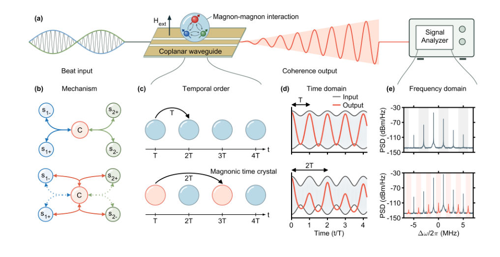
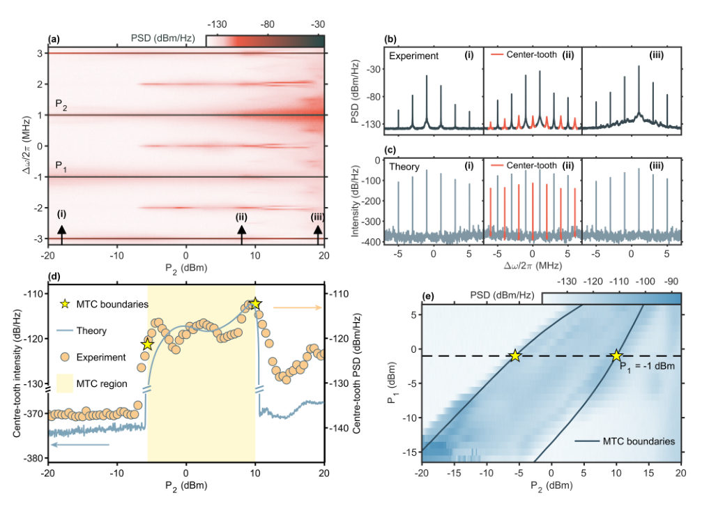
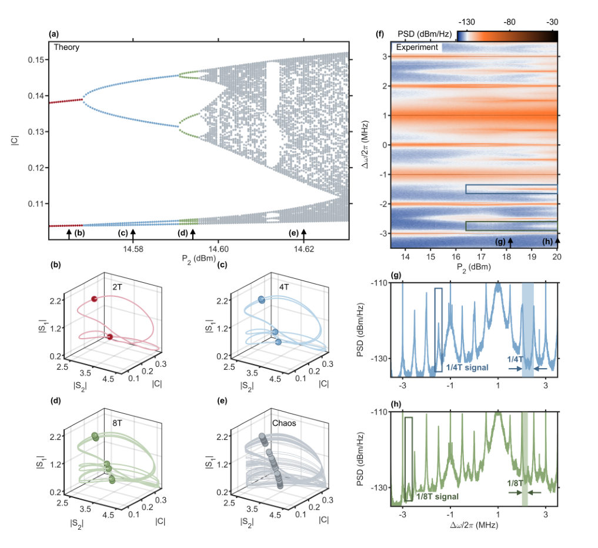
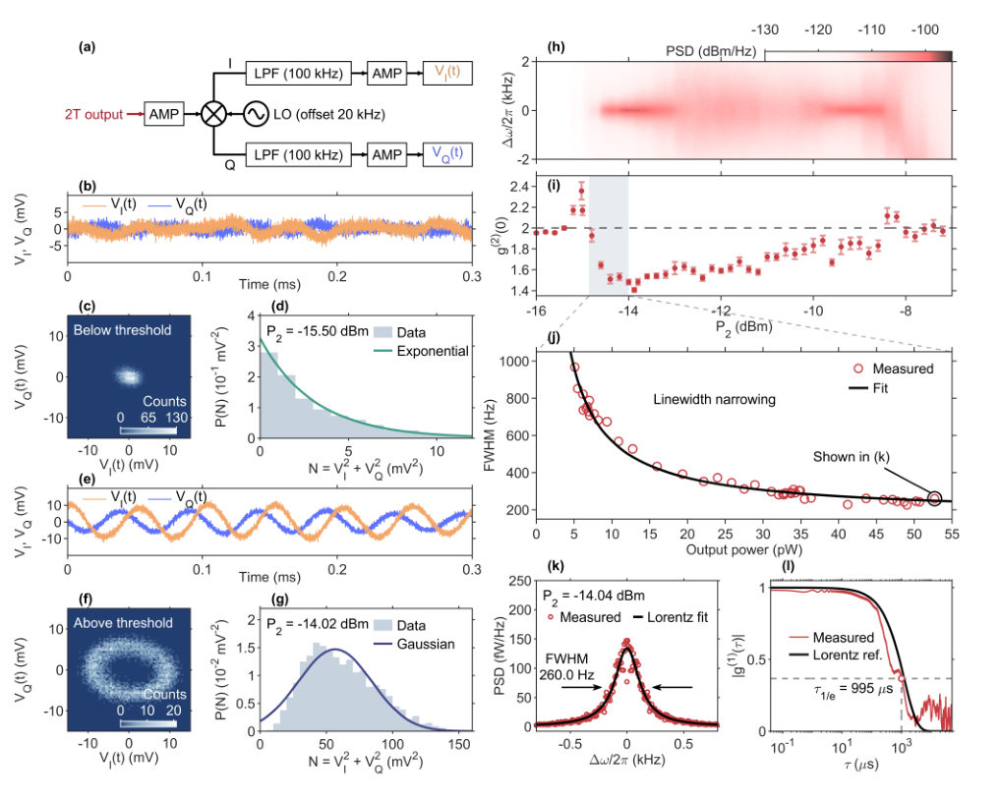
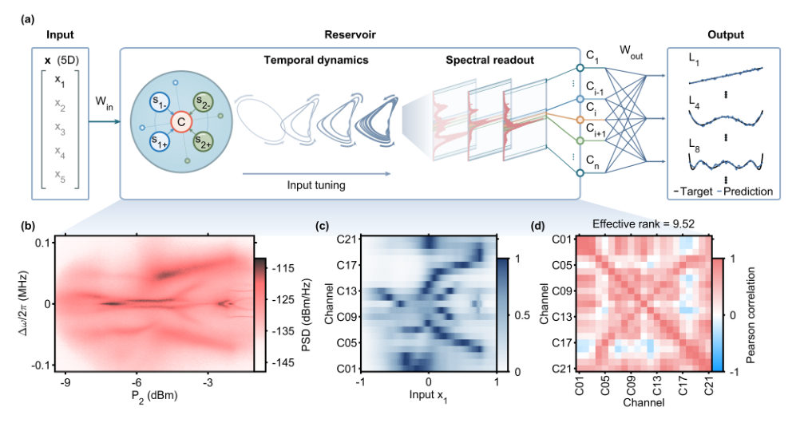
Summary. This paper reports the realization of a room-temperature magnonic time crystal exhibiting lasing coherence driven by microwave beating. The research demonstrates that three-magnon interactions provide the necessary gain for this coherent output, confirming period doubling and spectral narrowing. Furthermore, the system's complex temporal dynamics are successfully mapped onto a physical reservoir for nonlinear signal processing.
Why it may be interesting. This work bridges concepts from non-equilibrium quantum dynamics (time crystals) with practical quantum optics (lasing coherence) and information theory (reservoir computing) using magnonics, making it highly relevant to open quantum systems research.
Main problem. The primary challenge addressed is realizing highly coherent, externally accessible radiation from Discrete Time Crystals (DTCs) by overcoming gain limitations while maintaining subharmonic stability.
Main result. The authors successfully demonstrated a room-temperature magnonic time crystal exhibiting robust period doubling and lasing coherence, which was also shown to function as a physical reservoir for nonlinear signal processing.
Method. The study combines experimental measurements using microwave beat driving on YIG with theoretical modeling based on an effective Hamiltonian and nonlinear scattering models.
Model / system. The physical system is a magnonic time crystal realized in yttrium iron garnet (YIG) using a pump-induced magnon mode. The dynamics are governed by an effective Hamiltonian incorporating three-magnon interactions ($\hat{H}_{3,reg}$ and $\hat{H}_{3, imes}$).
Key observables. Linewidth narrowing (to 260.0 Hz), first-order correlation decay time ($\sim 995 \mu$s), and the observation of period doubling (2T, 4T, 8T) in the emitted spectrum.
Important parameters / regimes. The system response depends critically on the microwave beat drive parameters, particularly the power of the second drive component ($P_2$), which controls the transition between periodic regimes.
Assumptions / limitations. The analysis relies on modeling the gain mechanism via three-magnon confluence and uses approximations like linear stability analysis for some model components.
Figures summary. Figures illustrate the spectral transitions from T-periodic to 2T-periodic responses (Fig. 1, 2), the confirmation of period-doubling cascades and chaos (Fig. 3), and the development of laser-like coherence via IQ measurements (Fig. 4).
Paper structure. The paper progresses from demonstrating the fundamental period-doubling response and coherence (Chunk 1), to mapping out the full nonlinear dynamics, including period-doubling cascades and chaos (Chunk 2), and finally applying the system's coherent output to function as a physical reservoir for nonlinear computation (Chunk 3).
Discrete time crystals (DTC) can respond at an integer multiple of the drive period. Internal order-parameter measurements have advanced studies of this novel non-equilibrium phase of matter; however, turning this order into highly coherent, externally accessible radiation remains challenging: pump-driven nonlinear processes must supply sufficient gain to compensate dissipation while preserving subharmonic stability. Here we realize a room-temperature magnonic time crystal (MTC) with radiation of lasing coherence using a pump-induced magnon mode in yttrium iron garnet. A microwave beat drive produces robust period doubling over a finite parameter range, with spectral signatures of higher-order MTC at stronger driving. The emitted field exhibits linewidth narrowing to 260.0 Hz and a first-order correlation decay time of $995 μs$. Our model links this response to three-magnon confluence, yields a stability region consistent with experiment and predicts a possible transition to chaos. We further map the complex temporal dynamics into frequency-resolved nonlinear features for reservoir computing. These results bridge time-crystalline order and nonlinear information processing through intrinsic magnon-magnon interactions and lasing coherence.
Authors: Paweł Gruszecki, Victor Pacheco-Peña
Type: theory · Category: other · PDF: https://arxiv.org/pdf/2610.32766v1
Analysis basis: full PDF text, analyzed in chunks
Topic relevance: 🔥 driven-dissipative phase transition 4/5 · analog quantum simulation 2/5 · methods for driven-dissipative 2/5 · non-equilibrium universality 2/5 · Keldysh / 2PI / non-Gaussian methods 1/5
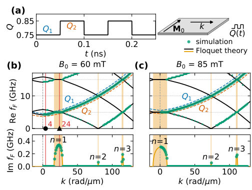
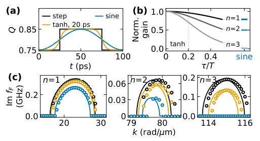
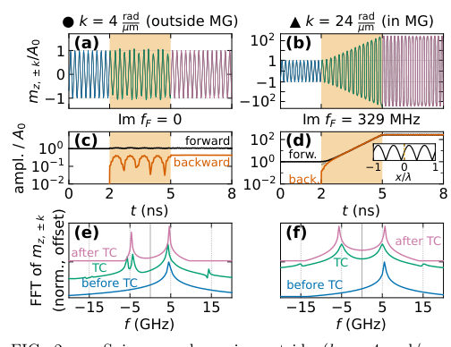
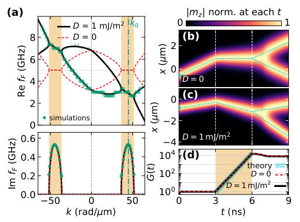
Summary. This paper develops a theoretical framework to engineer momentum gaps in magnonic systems using time-periodic modulation of magnetic anisotropy. It shows that a slow drive can amplify multiple spin-wave bands within these gaps, and critically, that the Dzyaloshinskii–Moriya interaction enables these amplified wave packets to propagate stably inside the gap structure.
Why it may be interesting. This work applies advanced concepts from Floquet engineering and parametric amplification, which are highly relevant to open quantum systems and quantum optics, by translating them into the realm of magnonics.
Main problem. To establish and analyze the magnonic counterpart of photonic time crystals, specifically investigating how momentum gaps (MGs) are engineered using Floquet theory in a system with periodically switched anisotropy.
Main result. The study demonstrates that a slow, periodic drive can amplify multiple spin-wave bands above intrinsic losses, and the inclusion of Dzyaloshinskii–Moriya interaction allows these amplified wave packets to propagate rigidly inside the momentum gap.
Method. The analysis relies on deriving the Floquet band structure using the monodromy matrix approach applied to the linearized Landau–Lifshitz equation, which is then compared against micromagnetic simulations.
Model / system. The system is an ultrathin ferromagnetic film with periodically switched perpendicular magnetic anisotropy (PMA), modeled by the linearized Landau–Lifshitz equation. The dynamics are governed by the temporal modulation of the PMA, $Q(t)$.
Key observables. Floquet band structure (Real and Imaginary parts of the quasi-frequency $f_F$ vs $k$), amplification rate ($ ext{Im } f_F$), and the induced drift velocity ($v_D$).
Important parameters / regimes. The modulation frequency ($f_{ ext{mod}}$), the bias field ($B_0$), and the strength of the Dzyaloshinskii–Moriya interaction (DMI).
Assumptions / limitations. The analysis uses the linearized Landau–Lifshitz equation and assumes the system can be described by a two-state protocol for calculating the monodromy matrix.
Figures summary. Figures illustrate the time evolution of the anisotropy, the resulting Floquet band structure showing gaps, and wave dynamics both inside and outside the gaps under different modulation waveforms and DMI effects.
Paper structure. The paper progresses by first establishing the theoretical framework using Floquet theory and the monodromy matrix to predict gap opening. It then details the role of the modulation waveform in controlling higher-order gaps and demonstrates slow-drive amplification. Finally, it incorporates DMI to show gap-protected wave propagation.
Photonic time crystals host momentum gaps in which waves grow exponentially but cannot propagate. We establish their magnonic counterpart in a thin film with periodically switched anisotropy, deriving its Floquet band structure and confirming it micromagnetically. Gaps require a precession-ellipticity contrast. The waveform controls high-order gaps: a single 1~GHz switching drive amplifies a comb of spin-wave bands, from 2.5 to 4.5~GHz, above Gilbert losses even with smoothed edges, unlike sinusoidal modulation. With the Dzyaloshinskii--Moriya interaction, amplified packets propagate inside the gap while growing.
Authors: Xiangyu Bi, Aoshen Yang, Hongzi Cao, Ganyu Chen, Yuqiang Fang, Zeya Li, Qizheng Sun, Junwei Huang, Da Wang, Fuqiang Huang, Toshiya Ideue, Qianghua Wang, Yoshihiro Iwasa, Hongtao Yuan
Type: both · Category: quantum information and computing · PDF: https://arxiv.org/pdf/2610.32767v1
Analysis basis: full PDF text, analyzed in chunks
Topic relevance: QC/QI experiment 3/5 · analog quantum simulation 3/5 · Keldysh / 2PI / non-Gaussian methods 2/5 · methods for driven-dissipative 2/5 · driven-dissipative phase transition 1/5 · interference shaping light 1/5 · quantum measurements 1/5
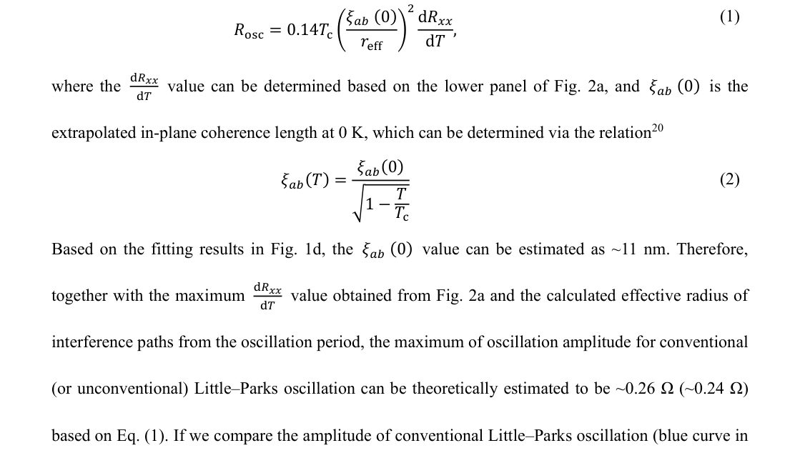
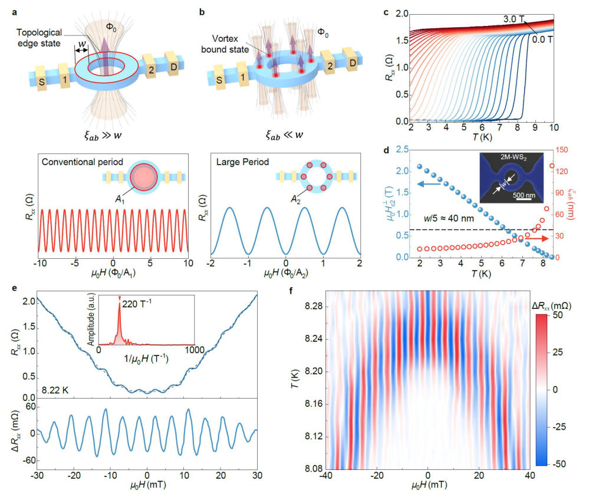
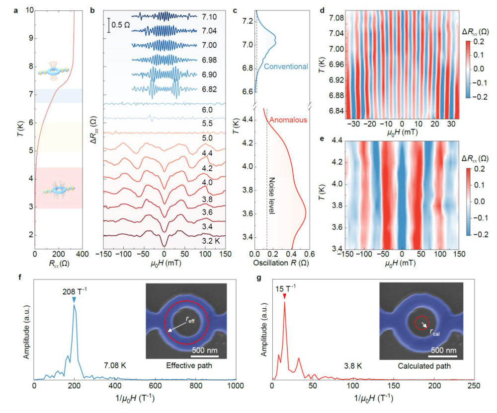
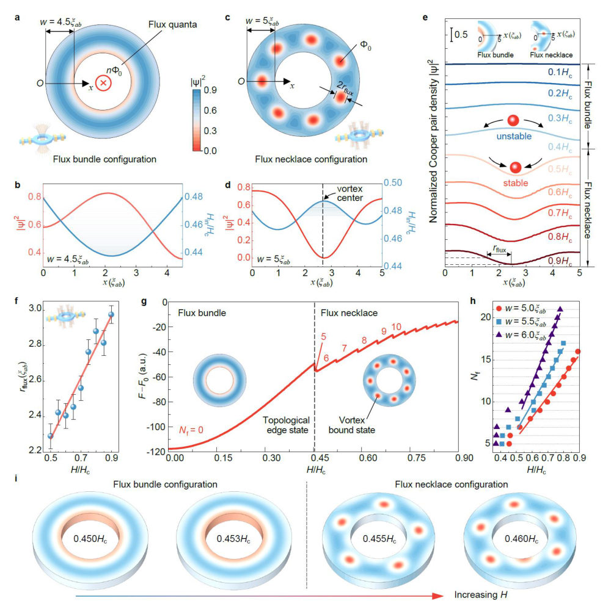
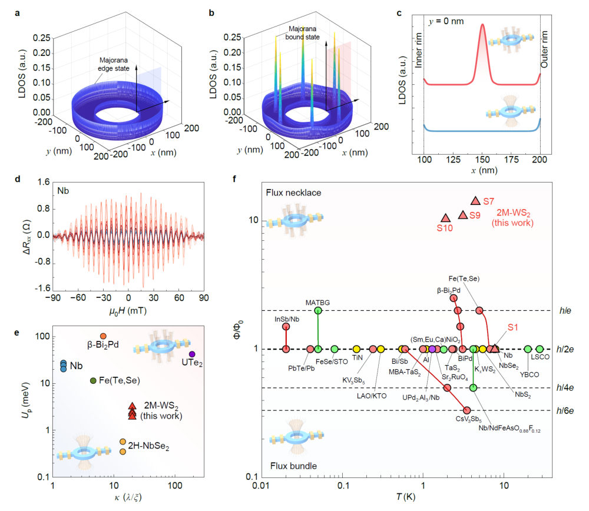
Summary. This work reports on a novel method to switch between two distinct magnetic flux configurations—a flux bundle and a flux necklace—in superconducting nano-rings made of 2M-WS2. The transition is controlled by tuning the temperature, which alters the superconducting coherence length relative to the ring geometry. This transition is theoretically linked to the emergence of Majorana zero modes, offering a promising platform for topological quantum computation.
Why it may be interesting. The controlled switching between different topological flux configurations provides a concrete, tunable platform for realizing and studying Majorana zero modes, which are central to topological quantum computing.
Main problem. The paper demonstrates a controllable transition between topologically protected edge states (flux bundle) and localized vortex bound states (flux necklace) in superconducting rings.
Main result. By tuning temperature to change the coherence length relative to the annulus width, the system can be driven from a flux bundle state to a flux necklace state, which is associated with Majorana zero modes.
Method. The study combines transport measurements (Little-Parks oscillations) with advanced theoretical simulations, including Ginzburg-Landau and Bogoliubov-de Gennes equations.
Model / system. The physical system is an interferometric nano-ring device made from the topological superconductor 2M-WS2. The model analyzes the competition between flux quantization in the ring center versus localization along the annulus walls.
Key observables. Little-Parks oscillation period, local density of states (LDOS) zero-energy peaks, and the ratio of coherence length to annulus width ($\xi_{ab}/w$).
Important parameters / regimes. Temperature (controlling $\xi_{ab}$), annulus width ($w$), and the superconducting transition temperature ($T_c$).
Assumptions / limitations. The transition is governed by the relative scales of the coherence length and annulus width, and the localized states are assumed to host Majorana zero modes.
Figures summary. Figures illustrate the comparison between flux bundle and flux necklace magnetic flux distributions, the temperature dependence of magnetoresistance oscillations, and the resulting zero-energy peaks in the LDOS.
Paper structure. The paper establishes the physical system and the two competing flux states, uses Little-Parks oscillations to experimentally identify the transition regime, and then employs TDGL and BdG simulations to theoretically confirm the mechanism and the emergence of Majorana bound states.
Manipulating flux quanta in topological superconductors is central to vortex braiding in quantum computing. Their interferometric superconducting rings can host either topologically protected edge states with fluxes confined inside the central hollow area or vortex bound states in flux cores at the annulus walls. Here we demonstrate a strategy to drive topological edge states into vortex bound states by tuning the relative scale of vortex size and annulus width in nano-ring interferometric device on 2M-WS$_2$ topological superconductor. Near its superconducting transition where the coherence length exceeds the annulus width, Little-Parks oscillations exhibit expected periods for flux bundles in ring-center, consistent with edge states residing at inner and outer rims of the annulus. Upon cooling, where the coherence length shrinks below the annulus width, the unexpectedly increased oscillation period reflects multiple fluxes distributed along annulus region in flux necklace configuration, implying a transition from extended edge states to localized vortex bound states. Ginzburg-Landau simulations and local density-of-states calculations with Bogoliubov-de Gennes equations reveal that large values for both Ginzburg-Landau parameter and flux-pinning energy are vital for such a transition. Our findings provide a novel strategy for understanding flux manipulation towards flux braiding and topological quantum computing.
Authors: Kazi T. Mahmood, M. Arif Hasan
Type: theory · Category: other · PDF: https://arxiv.org/pdf/2610.32124v1
Analysis basis: full PDF text, analyzed in chunks
Topic relevance: quantum measurements 3/5 · methods for driven-dissipative 2/5 · Keldysh / 2PI / non-Gaussian methods 1/5 · analog quantum simulation 1/5 · correlated / nonlocal dissipation 1/5 · driven-dissipative phase transition 1/5 · non-equilibrium universality 1/5
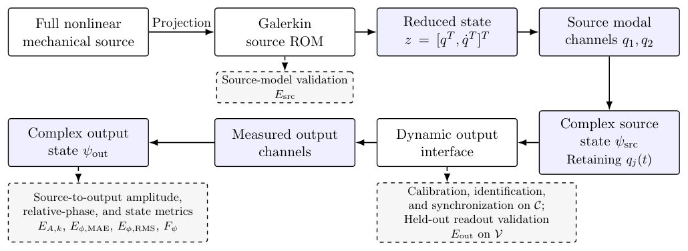
Summary. This work presents a comprehensive validation framework for reduced-order models of nonlinear mechanical systems. It distinguishes between errors originating in the mechanical source, the readout channel model, and the resulting physical state distortion. The findings provide quantitative metrics for assessing model adequacy, which is crucial for reliable data interpretation in complex physical measurements.
Why it may be interesting. While focused on mechanics, the rigorous methodology for decomposing total error into distinct physical sources (source vs. measurement/readout) is highly relevant to open quantum systems where measurement back-action and readout fidelity are critical concerns.
Main problem. The paper addresses the challenge of accurately validating reduced-order models (ROMs) for nonlinear mechanical structures when the measured signals pass through complex, dynamic readout channels.
Main result. The developed framework successfully separates and quantifies errors arising from the mechanical source, the readout model prediction, and the physical distortion of the modal state.
Method. It employs an offline validation framework using consistent complex coefficients to analyze modal amplitudes, relative phases, and state fidelity across different interface models (linear vs. nonlinear).
Model / system. The system is a nonlinear mechanical lattice whose dynamics are modeled by a full-order equation, which is then reduced via Galerkin projection. The output is coupled to a dynamic readout subsystem.
Key observables. Source error ($E_{src}$), readout prediction error ($E_{out}$), relative-phase mean absolute error ($E_{\phi,MAE}$), and normalized-state fidelity ($F_\psi$).
Important parameters / regimes. Forcing levels ($F_0$), resonance frequencies ($\omega_{o,j}$), and coupling parameters ($\eta$).
Assumptions / limitations. The analysis assumes the ability to separate source, readout, and state distortion effects, though it notes that constrained linear approximations may not reflect the true physical behavior.
Figures summary. Figures summarize the source-to-output modeling pipeline and error metrics, comparing results for linear versus cubic nonlinear interfaces, particularly showing increased phase and state errors with cubic distortion.
Paper structure. The paper introduces the full nonlinear source model, details the coupled dynamic readout interface, develops the validation framework using complex coefficients, and presents quantitative comparisons of errors across different forcing and interface conditions.
Reduced-order models of nonlinear structures are often evaluated using mechanical response errors, while the signals of interest may also pass through dynamic readout channels that modify their amplitudes and phases. We develop an offline validation framework that distinguishes mechanical source error, readout-model prediction error, and physical distortion of a normalized two-component modal state. We couple a Galerkin reduced source to two calibrated resonant channels and evaluate modal amplitudes, relative phase, and state fidelity using consistent complex coefficients. For the linear readout model, an exact output-error decomposition distinguishes source and interface modeling contributions, while a two-channel identity relates differential channel transfer to normalized-state distortion. For the ten-mass nonlinear lattice, the two-mode source and coupled-output errors over the two-resonance interface band are $3.069 \times 10^{-2}$ and $2.448 \times 10^{-2}$. At $F_0=0.04$, the relative-phase mean absolute error increases from $9.82 \times 10^{-3}$ rad for the linear interface to $1.74 \times 10^{-2}$ rad for the nonlinear interface. At the strongest forcing, a four-coordinate proper orthogonal decomposition model gives a source error of $2.05 \times 10^{-2}$, compared with $8.03 \times 10^{-2}$ for four linear modes on the same held-out test set. The noise analysis shows that accurate in-band output prediction can coexist with substantial parameter error, while a constrained linear approximation of nonlinear readout data produces a substantial residual. We use these findings to assess reduced-model adequacy for the specified outputs, forcing levels, and validation frequencies.
Authors: Dawei Li, Juhe Liu, Yifei Hao, Qiuchen Wu, Xi Huang, Jesse Stebbing, Xinyi Hou, Gaolei Zhao, Kun Wang, Yongfeng Lu, Xia Hong
Type: experiment · Category: other · PDF: https://arxiv.org/pdf/2610.32228v1
Analysis basis: full PDF text, analyzed in chunks
Topic relevance: interference shaping light 3/5 · quantum measurements 1/5 · quantum optics experiment 1/5
Summary. This paper reports the first realization of nonvolatile, nanoscale control over Second-Harmonic Generation (SHG) in layered CIPS by interfacing it with patterned ferroelectric domain walls in PZT. By utilizing the domain structure, the SHG intensity and polarization can be deterministically modulated, enabling programmable design of nonlinear light sources at the nanoscale.
Why it may be interesting. This work demonstrates electrical/structural control over nonlinear optical responses in 2D materials, which is highly relevant to developing integrated quantum photonic devices or advanced light sources.
Main problem. The research aims to achieve nanoscale, nonvolatile control over the amplitude and polarization of Second-Harmonic Generation (SHG) in layered CuInP2S6 (CIPS).
Main result. The SHG signal is continuously modulated (enhanced or quenched) by the domain walls in the underlying ferroelectric PbZr0.2Ti0.8O3 (PZT), allowing for programmable control of nonlinear light properties.
Method. The study uses nonlinear optical microscopy to measure SHG, correlating the signal changes with the polarization state of ferroelectric domain walls characterized by PFM.
Model / system. The physical system is a CIPS/PZT heterointerface, where the ferroelectric domain structure of PZT acts as the control element for the nonlinear optical response of the van der Waals ferroelectric CIPS.
Key observables. SHG intensity and polarization, which are modulated by the relative orientation between the CIPS polar axis and the PZT domain wall polarization.
Important parameters / regimes. The thickness of the CIPS flake (e.g., 9-50 nm) and the relative angle ($ heta$) between the CIPS polar axis and the PZT domain wall polarization are critical parameters.
Assumptions / limitations. The analysis assumes that the SHG response is dominated by the interfacial coupling between the CIPS polar axis and the in-plane polarization of the PZT domain walls.
Figures summary. Figures show SHG mapping and polar plots demonstrating the dependence of the SHG signal on the incident light polarization angle ($\varphi$) and the domain wall polarization ($ heta$).
Paper structure. The paper establishes the platform using PFM/AFM to map domain structures, followed by SHG measurements to quantify the nonlinear optical response, and finally, theoretical modeling confirms the dependence on polarization alignment.
The control of nonlinear optical responses in van der Waals ferroelectrics at the nanoscale offers opportunities for developing two-dimensional integrated nanophotonics with programmable functionalities. In this work, we report the first realization of nanoscale nonvolatile control of the amplitude and polarization of second-harmonic generation (SHG) response in layered CuInP2S6 (CIPS) via the domain structure in an interfacial PbZr0.2Ti0.8O3 (PZT) thin film. The SHG intensity at CIPS/PZT heterointerface is continuously modulated, either substantially enhanced or almost entirely quenched, by the circular domain walls in underlying ferroelectric oxide. The interfacial coupling of CIPS polar axis with in-plane polarization of PZT domain walls tailors the SHG light polarization into two-fold (C2V) symmetry, which is well modeled by nonlinear electromagnetic theory. Overall, this study enables nonvolatile programmable design of nonlinear light intensity and polarization in van der Waals ferroelectrics at the nanoscale.
Authors: Weiyan Qi, Stefano Ponzoni, Ashim Pramanik, Vitaly Gorelov, Yannis Laplace, Gianluca Stefanucci, Enrico Perfetto, Esteban Morcos, Marino Marsi, Steven Francis Udaundo, Sebastian Maherlein, Amina Taleb-Ibrahimi, Kaibo Zheng, Tonu Pullerits, Luca Perfetti
Type: both · Category: strongly correlated electrons · PDF: https://arxiv.org/pdf/2610.32437v1
Analysis basis: full PDF text, analyzed in chunks
Topic relevance: Keldysh / 2PI / non-Gaussian methods 2/5 · analog quantum simulation 2/5 · methods for driven-dissipative 2/5 · driven-dissipative phase transition 1/5 · non-equilibrium universality 1/5 · quantum measurements 1/5
Summary. This work reports experimental evidence from 2D perovskites showing that excitons remain stable and form a high-density quantum fluid even at excitation levels predicted to cause dissociation by Mott theory. By using tr-ARPES and advanced theoretical modeling, the authors characterize this fluid via a unique Mexican-hat dispersion, confirming robust, long-lived electron-hole correlations.
Why it may be interesting. The demonstration of a high-density, long-lived excitonic fluid exhibiting BCS-like characteristics in a solid-state material provides a tangible platform for studying strongly correlated quantum matter far from equilibrium.
Main problem. The study investigates the stability and electronic structure of excitons at high photoexcitation densities, challenging the conventional Mott picture which predicts exciton dissociation due to screening.
Main result. The authors provide direct evidence for a long-lived, high-density quantum fluid of excitons, characterized by a Mexican-hat dispersion, which persists far beyond the optical saturation threshold.
Method. The research combines time- and angle-resolved photoelectron spectroscopy (tr-ARPES) experiments with theoretical modeling using the pseudo-Hermitian Bethe–Salpeter Hamiltonian (PH-BSH).
Model / system. The physical system is a two-dimensional (2D) hybrid perovskite. The theoretical framework models the system using the PH-BSH, moving beyond simple approximations to describe the excitonic fluid state.
Key observables. Mexican-hat dispersion, exciton binding energy (0.18 eV), spectral weight dispersion (downward vs. upward), and the persistence of the excitonic resonance intensity.
Important parameters / regimes. High photoexcitation densities (up to $5 imes 10^{12}/ ext{cm}^2$), fluences significantly above the optical saturation threshold, and timescales extending into the picosecond regime.
Assumptions / limitations. The analysis relies on the PH-BSH framework and assumes that the observed persistence of the resonance indicates a stable, correlated quantum fluid state.
Figures summary. Figures illustrate tr-ARPES maps showing the evolution of the exciton resonance intensity with increasing pump fluence, and compare the observed spectral weight dispersion in the low-density gas regime versus the high-density quantum fluid regime.
Paper structure. The paper progresses by first establishing the theoretical conflict with the Mott picture, presenting experimental evidence via tr-ARPES showing the persistence of the excitonic structure, and finally comparing these observations to advanced theoretical calculations using the PH-BSH.
Excitons are conventionally expected to destabilize at high photoexcitation densities, as screening weakens the electron-hole attraction. Recent studies, however, challenge this paradigm, suggesting that excitons generated by strong optical pumping can remain stable even beyond the onset of population inversion. Here, using time- and angle-resolved photoelectron spectroscopy on 2D hybrid perovskites, we provide direct evidence for such a high-density excitonic state, characterized by a distinctive Mexican-hat dispersion. Remarkably, this excitonic band reconstruction endures for orders of magnitude longer than the optical coherence time, revealing a population-sustained electronic structure that survives well into the incoherent regime. The excitonic resonance also persists far beyond optical saturation, at densities where exciton wavefunctions strongly overlap. Our findings reveal a long-lived, high-density quantum fluid of excitons with characteristics reminiscent of a BCS condensate, an electronic structure markedly different from that of the dilute limit.
Authors: Jeffrey Neethirajan, Rikako Yamamoto, Marisel Di Pietro Martínez, Luke A. Turnbull, Praveen Vir, Chandra Shekar, Claudia Felser, Luis Carlos Colocho Hurtarte, Benedikt J. Daurer, Majid Kazemian, Burkhard Kaulich, Claire Donnelly
Type: experiment · Category: other · PDF: https://arxiv.org/pdf/2610.31952v1
Analysis basis: full PDF text, analyzed in chunks
Topic relevance: analog quantum simulation 2/5 · Frenkel-Kontorova 1/5 · driven-dissipative phase transition 1/5 · non-equilibrium universality 1/5 · quantum measurements 1/5 · scars & prethermalization 1/5
Summary. This work reports the first experimental observation of a one-dimensional chain of Bloch point singularities in a chiral magnet using soft X-ray magnetic tomography. By mapping the 3D magnetization, the researchers quantified the stability of these topological defects, finding that they persist over significant distances and identifying a critical separation for their spontaneous annihilation.
Why it may be interesting. While focused on magnetism, the study of topological defects and their stability thresholds (like the 90 nm annihilation distance) provides a physical model for understanding defect-mediated phase transitions or energy barriers in complex many-body systems, which has analogies in quantum materials.
Main problem. To experimentally observe and study the collective behavior of Bloch point singularities in a 3D magnetic system, moving beyond observations of isolated or simple topological textures.
Main result. The authors observed a 1D dipole chain of Bloch point singularities in a chiral magnet, finding that neighboring Bloch and anti-Bloch points are stable down to 60 nm, with an annihilation threshold near 90 nm.
Method. Soft X-ray ptychographic magnetic vector tomography, utilizing X-ray Magnetic Circular Dichroism (XMCD) to reconstruct the 3D magnetization configuration.
Model / system. The study uses an anisotropic chiral magnet, specifically a Heusler alloy ($ ext{Mn}_{1.4} ext{PtSn}$), fabricated into a wedge-shaped lamella to create a continuous thickness gradient.
Key observables. Bloch point singularities, magnetic chirality (clockwise/counterclockwise winding), domain wall structure, and the 3D magnetization vector components ($M_x, M_y, M_z$).
Important parameters / regimes. Separation stability down to 60 nm; annihilation threshold of $\approx 90$ nm; sample thickness gradient from 170 nm to 500 nm.
Assumptions / limitations. The technique overcomes previous limitations by probing 3D configurations in samples up to 500 nm thick, and the analysis assumes the weak stray magnetic field does not alter the magnetic state between measurements.
Figures summary. Figures illustrate the thickness-dependent domain size, 2D stripe domain patterns, and 3D reconstructions showing the location and stability of Bloch point chains along domain boundaries.
Paper structure. The paper progresses from establishing the need to study collective defects to presenting the experimental setup (tomography), detailing the observation of the 1D dipole chain, and quantifying the stability limits of these topological point defects.
Bloch point singularities play an important role in magnetic systems, mediating changes in topology in three dimensional configurations. However, until now they have only been observed as isolated objects or as part of individual topological textures. Here we present the experimental observation of a 1D dipole chain of Bloch points in an anisotropic chiral magnet using soft X-ray magnetic vector tomography. We identify that the chain of Bloch point singularities lies along a boundary between regions of opposite chirality and that neighbouring Bloch and anti-Bloch points are stable at separations down to 60 nm. The stability of the Bloch points is determined to be closely related to the surrounding topology of the magnetisation configuration and a threshold separation for the spontaneous annihilation of Bloch point-anti-Bloch point pairs within chiral domain walls is identified to be approximately 90 nm in distance. This observation of a chain of Bloch points and the insight into their stability, offers a route to explore the correlative behaviour of such topological point defects. The behaviour and control of such point defects is of relevance for the control of 3D magnetisation configurations, and provides a new route towards the creation of correlated configurations of singularities in a magnetic system.
Authors: Xiaoqian M. Chen, Justin S. Woods, Ulrich Welp, Wai-kwong Kwok, Ralu Divan, David A. Czaplewski, Scott Dhuey, Sujoy Roy, Rajesh V. Chopdekar, Lance E. De Long, Andi Barbour, Claudio Mazzoli, Ian Robinson, J. Todd Hastings
Type: experiment · Category: other · PDF: https://arxiv.org/pdf/2610.31919v1
Analysis basis: full PDF text, analyzed in chunks
Topic relevance: analog quantum simulation 2/5 · Frenkel-Kontorova 1/5 · driven-dissipative phase transition 1/5 · interference shaping light 1/5 · non-equilibrium universality 1/5 · quantum measurements 1/5
Summary. This work introduces and validates Bragg Coherent Diffraction Imaging (BCDI) as a powerful experimental tool to visualize magnetic domain wall dynamics in artificial spin systems. By analyzing speckle patterns from both structural and magnetic Bragg peaks, the researchers reconstructed real-space images showing domain walls moving over millisecond timescales. This technique offers a significant advancement for studying magnetic materials relevant to next-generation memory applications.
Why it may be interesting. The ability to image magnetic dynamics in real-space and time using X-ray scattering provides a powerful, non-invasive probe into the non-equilibrium dynamics of magnetic textures, which is relevant to understanding phase transitions and energy dissipation in condensed matter systems.
Main problem. The primary goal is to track the motion and dynamics of magnetic domain walls in real-space and time, which is critical for developing next-generation magnetic memory and logic devices.
Main result. The study successfully demonstrated that single-shot Bragg coherent diffraction imaging (BCDI) is a powerful technique to reconstruct real-space movies of domain wall motion on millisecond time scales.
Method. The technique uses resonant X-ray scattering via BCDI, which reconstructs real-space images by analyzing speckle patterns at both structural and antiferromagnetic (AF) Bragg peaks simultaneously.
Model / system. The experiment uses a permalloy artificial square lattice exhibiting an antiferromagnetic (AF) ground state, simulating systems like Artificial Spin Ice (ASI). The measurement is performed using $\sigma$-polarized X-rays to decouple charge and magnetic scattering signals.
Key observables. Reconstructed real-space images showing domain wall motion, magnetic domain phase (color), and lattice structure (amplitude/brightness).
Important parameters / regimes. Domain wall dynamics observed on millisecond time scales; lattice reconstruction resolution $\sim 150$ nm; magnetic domain reconstruction resolution $\sim 1.2$ µm.
Assumptions / limitations. The reconstruction assumes a uniform magnetic texture along the z-direction and that the displacement between subsequent time frames is small.
Figures summary. Figures show the time evolution of antiphase domain boundaries via PEEM comparison with simulated speckle patterns (Fig. 1), the scattering geometry (Fig. 2), and the final phase-reconstructed image showing domain walls and their time evolution (Fig. 3 & 4).
Paper structure. The paper establishes the need for real-space domain wall tracking, details the BCDI methodology using resonant X-ray scattering and two-step phase retrieval (structural then magnetic), presents the visualization of domain wall dynamics, and discusses future improvements in temporal resolution.
Domain wall dynamics and their manipulation in finite-size systems serve as a promising platform for beyond Moore's law applications. Yet, the imaging techniques to track their motion in real-space and time are limited. Here, we use magnetic domain walls formed in permalloy artificial square lattice to demonstrate that single-shot Bragg coherent diffraction imaging (BCDI) is a powerful approach for this purpose. Our BCDI reconstructed images revealed milliseconds time-scale dynamics of the antiphase magnetic domain walls traveling through an antiferromagnetically ordered sample.
Authors: Gleb S. Seleznev, David C. Ohnmacht, Wolfgang Belzig
Type: theory · Category: other · PDF: https://arxiv.org/pdf/2610.32839v1
Analysis basis: full PDF text, analyzed in chunks
Topic relevance: Keldysh / 2PI / non-Gaussian methods 2/5 · methods for driven-dissipative 2/5 · analog quantum simulation 1/5 · quantum measurements 1/5
Summary. This paper theoretically analyzes the transconductance of topological Josephson junctions at finite temperatures. It demonstrates that while temperature generally destroys perfect quantization, it can reveal subtle, individual topological features within the Andreev spectrum. This establishes finite-temperature transport as a powerful diagnostic tool for probing complex superconducting topology.
Why it may be interesting. The work connects topological invariants (Chern numbers) to measurable transport quantities (transconductance) under non-zero temperature conditions, providing a thermal probe for otherwise inaccessible quantum properties.
Main problem. The study investigates how finite temperature affects the quantized transconductance observed in multi-terminal Josephson junctions (MTJJs) possessing topological Andreev spectra.
Main result. Temperature both destroys the exact quantization of transconductance and, constructively, allows the measurement of individual Andreev Bound State (ABS) topologies that are otherwise hidden at zero temperature.
Method. The transconductance is derived using linear-response theory applied to the effective Bogoliubov-de Gennes (BdG) Hamiltonian describing the junction's ABSs.
Model / system. The system is a multi-terminal Josephson junction (MTJJ) with $N$ superconducting leads, whose physics is governed by an effective BdG Hamiltonian. The analysis distinguishes between zero-energy and finite-energy topological crossings within the ABS spectrum.
Key observables. Transconductance ($G_{ij}$), ground-state Chern number ($C_{ij}$), individual-ABS Chern numbers ($C_{ij}^k$), and Berry curvature ($B_{ij}^k$).
Important parameters / regimes. Temperature ($T$), superconducting phases ($\phi_\alpha$), and the junction geometry (number of terminals $N$).
Assumptions / limitations. The analysis assumes quasistatic thermal equilibrium and utilizes linear-response theory, neglecting continuum states.
Figures summary. Figures schematically illustrate the four-terminal MTJJ setup, the ABS spectra versus phase, and the mechanism of topological crossings (both zero-energy and finite-energy).
Paper structure. The paper first establishes the $T=0$ quantization based on the ground-state Chern number, then extends the analysis to finite temperature using linear-response theory to show both the destructive and constructive roles of thermal excitations.
Multiterminal Josephson junctions (MTJJs) provide a controllable platform for engineering topological Andreev spectra. At zero temperature, Andreev bound states (ABSs) with nonzero Chern numbers give rise to quantized transconductance between superconducting terminals. We derive the finite-temperature transconductance of MTJJs using linear-response theory. We first demonstrate the destructive role of temperature: changes in the thermal occupations of the ABSs destroy exact transconductance quantization. We then show that finite temperature can also play a constructive role by making the transconductance sensitive to finite-energy topological crossings hidden from the zero-temperature response. Our results establish the thermal limitations of transconductance quantization and identify finite-temperature transport as a probe of otherwise inaccessible topology in Andreev spectra.
Authors: Simran Chourasia, Maurício F. C. Martins Quintela, J. J. Palacios
Type: theory · Category: strongly correlated electrons · PDF: https://arxiv.org/pdf/2610.32847v1
Analysis basis: full PDF text, analyzed in chunks
Topic relevance: Keldysh / 2PI / non-Gaussian methods 2/5 · analog quantum simulation 1/5
Summary. This paper develops a unified theoretical approach using the full Bethe-Salpeter Equation to calculate both excitons and magnons in 2D magnetic materials. By going beyond standard approximations, the authors resolve the theoretical inconsistency that previously caused the magnon's Goldstone mode to appear gapped. This provides a robust tool for understanding coupled spin-charge physics in systems like graphene magnets.
Why it may be interesting. The ability to treat spin dynamics (magnons) and charge excitations (excitons) within one consistent, gap-correcting framework is vital for understanding coupled spin-charge dynamics in 2D spintronic materials.
Main problem. The core challenge is developing a unified theoretical framework to describe both spin-flip collective excitations (magnons) and spin-conserving electron-hole bound pairs (excitons) in magnetic materials.
Main result. The authors successfully show that excitons and magnons can be calculated using the same full Bethe-Salpeter formalism, crucially correcting the standard approximation that incorrectly gaps the magnon's Goldstone mode.
Method. The methodology involves extending the Bethe-Salpeter Equation (BSE) beyond the Tamm-Dancoff approximation, utilizing the full many-body formalism to treat both types of excitations consistently.
Model / system. The study applies this formalism to model Hamiltonians, specifically using the extended Hubbard model to represent ferromagnetic and antiferromagnetic graphene, which are prototypical 2D semiconducting magnetic materials.
Key observables. Exciton energy (bound pairs), magnon dispersion (spin-flip excitations), and the zero-energy Goldstone mode.
Important parameters / regimes. On-site and non-local interaction strengths ($U$, $J$), and the magnetic ordering (ferromagnetic vs. antiferromagnetic).
Assumptions / limitations. The primary assumption is that the full BSE formalism, when correctly implemented, can treat the gapless nature of the magnon mode while simultaneously capturing the physics of excitons.
Figures summary. Figure 9 is noted to show the wave functions of the Goldstone magnon and the lowest bright exciton for ferromagnetic graphene at various high-symmetry points ($\Gamma, M, K/K'$), comparing results from BSE/TDA and BSE/RPA.
Paper structure. The paper reviews the BSE forms, focuses on applying the methodology to model Hamiltonians, and concludes with an application to magnetic graphene.
With the recent isolation of two-dimensional semiconducting magnetic materials, the theoretical study of spin-flip collective excitations (magnons) along with spin-conserving electron-hole bound pairs (excitons) has become particularly relevant. Describing both types of quasiparticles within the same theoretical framework is possible, in principle, but the well-established many-body formalism for the calculation of excitons, based on the intertwined Bethe-Salpeter and Hedin's equations, is not satisfactory for magnons, since the usual approximations produce a spurious gapped Goldstone mode. Here, we show that excitons and magnons can be computed on the same footing under the same Bethe-Salpeter formalism, while respecting the gapless Goldstone mode for magnons. We demonstrate how this can be achieved through the evaluation of the full Bethe-Salpeter equation, beyond the Tamm-Dancoff approximation in model Hamiltonians. As an example, we apply it to ferromagnetic and antiferromagnetic graphene, faithfully represented by the extended Hubbard model. Our results clarify the roles of on-site and non-local interactions in exciton and magnon appearance and identify consistency requirements relevant to extending the approach to first-principles calculations.
← Index · ← Previous · Next →